Ayol organizmi miyani autizmdan qanday himoya qiladi
{kind=link}
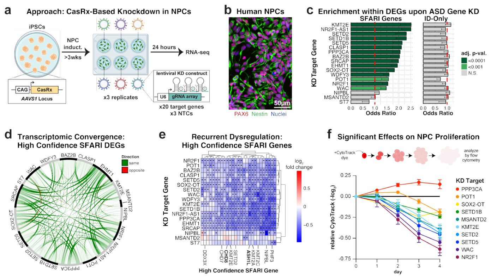
Autizm spektrining buzilishi o'g'il bolalarda qizlarga qaraganda uch-to'rt baravar ko'p uchraydi. Yangi tadqiqot shuni ko'rsatdiki, jinsiy xromosomalar va maxsus oqsillar genetik nosozliklarni kompensatsiya qila oladi. Bu molekulyar darajadagi himoya mexanizmini tushuntirishga yordam beradi. Natijalar neyrorivojlanish jarayonlarini chuqurroq o'rganishga yo'l ochadi.
Asosiysi
- 18 ta autizm genining bostirilishi hujayralarda bir xil nosozlik beradi.
- ZFX omili ayollarda ikkala X xromosomadan ham faol ishlab chiqariladi.
- ZFX oqsilining yuqori darajasi miyani genetik mutatsiyalardan himoya qiladi.
Batafsil
Autizm yuzlab genlardagi mutatsiyalar bilan bog'liq, ammo turli DNK uchastkalarining zararlanishi qanday qilib o'xshash belgiltarga olib kelishi sir bo'lib qolayotgan edi. Tadqiqotchilar inson neyral o'zak hujayralari madaniyatida autizm bilan bog'liq 18 ta asosiy gen faolligini pasaytirib ko'rishdi. Ma'lum bo'lishicha, ushbu genlardan birining o'chirilishi boshqa autizm genlari faoliyatining ommaviy pasayishiga olib keladi. Bu holat turli birlamchi buzilishlar yagona regulyator tarmoqda umumiy nosozlikni keltirib chiqarishini ko'rsatadi.
Gen tarmoqlarini tahlil qilish X xromosomasida joylashgan va ayollarda ikkala xromosomada ham faol bo'lgan ZFX transkripsiya omilini aniqladi. Ayollar ushbu omilning ikki marta ko'p dozasini olgani sababli, u zararlangan genlar ishini samaraliroq qo'llab-quvvatlaydi. Mualliflarning fikricha, ayol miyasida ZFX oqsilining yuqori darajada bo'lishi genetik mutatsiyalarni bartaraf etishda asosiy rol o'ynaydi. Aynan shuning uchun qizlarda autizm belgilari namoyon bo'lishi uchun ko'proq genetik xavf talab etiladi.
Cheklovlar
Tadqiqot in vitro sharoitidagi hujayra madaniyatida o'tkazilgan bo'lib, tirik organizmlarda sinovlarni talab qiladi.
Maqolaning to'liq tarjimasi
Annotatsiya
Autizm spektrining buzilishi (ASD) yuqori darajada nasliy bo'lib, yuzlab genlardagi mutatsiyalar ASDning alohida noyob sabablari sifatida ko'rsatilgan. Ushbu funksional jihatdan xilma-xil genlardagi buzilishlar ASDning asosiy belgilariga qanday olib kelishini tushunish hali ham muhim muammo bo'lib qolmoqda. Qolaversa, ASD erkaklarda ayollarga qaraganda uch-to'rt barobar ko'proq uchraydi va autizmga chalingan qizlar autizmga chalingan o'g'il bolalarga nisbatan ko'proq autosomik ASD xavf allellarini tushida tashiydi, biroq bu «ayollarni himoya qiluvchi effekt»ning (female protective effect, FPE) biologik asosi noma'lum. Bu yerda biz inson neyral o'tmishdosh hujayralarida 18 ta ASD genining alohida buzilishlari gen ekspresiyasiga umumiy ta'sir ko'rsatishini, jumladan, boshqa ASD genlarining keng ko'lamli pasayishini (downregulation) ko'rsatamiz. Gen regulyator tarmog'ining (GRN) de novo rekonstruksiyasi markaziy transkripsiya regulyatorlarini, jumladan, taniqli ASD geni CHD8 va bu transkripsion konvergensiyani boshqaruvchi REST kabi yangi nomzodlarni aniqlash imkonini berdi. Qolaversa, ayollarda faol va nofaol X-xromosomalarning ikkalasidan ham eksprimatsiya qilinadigan X-bog'langan transkripsiya omili ZFX ko'plab ASD genlarining asosiy faollashtiruvchisi sifatida namoyon bo'ldi: biz ayollar miyasida kuzatilgan yuqori ZFX ekspresiya darajasi turli xil ASD genlaridagi zararli mutatsiyalarni buferlashga qodir deb taxmin qilamiz, bu esa FPEga hissa qo'shadi. Umuman olganda, ushbu natijalar asosiy GRNlar alohida ASD genlari buzilganda qanday qilib keng va o'xshash tarzda disregulyatsiyaga uchrashini ochib beradi va ASDdagi ayollarni himoya qiluvchi effekt bo'yicha molekulyar tushunchani taqdim etadi.
Muhim
Neyral hujayralarida 18 ta ASD genining buzilishi umumiy transkripsiya javobiga olib keladi, ikkala X-xromosomadan eksprimatsiya qilinadigan ZFX omili esa asosiy himoya faollashtiruvchisi vazifasini bajaradi.
Keng ko'lamli genetik tadqiqotlar yuzlab genlarni autizm spektrining buzilishi (ASD) bilan bog'ladi, ularning aksariyati bitta allel funksiyasining yo'qolishiga olib keladigan noyob mutatsiyalar orqali aniqlangan. Bu gen dozasining ASDda muhim rol o'ynashini ko'rsatadi, shuning uchun ASD genlarining tegishli ekspresiya darajalari qanday saqlanishini aniqlash juda muhimdir. Gen regulyator tarmoqlarini (GRN) tavsiflash ushbu ASD genlarining to'g'ri transkripsion dozasini ta'minlovchi mexanizmlar haqida muhim ma'lumotlarni berishi mumkin. Bundan tashqari, ASD tarqalishida sezilarli darajada erkaklar ustunligi mavjud va ba'zi ASD genlari X-xromosomada aniqlangan bo'lsa-da, faqat X-bog'langan mutatsiyalarning o'zi bu jinsiy tafovutni to'liq tushuntira olmaydi. Qolaversa, erkaklarga nisbatan ASD namoyon bo'lishi uchun ayollar ko'proq autosomik genetik xavfga muhtojligi doimiy ravishda ko'rsatib kelingan, ammo bu ayollarni himoya qiluvchi effektning (FPE) genetik mexanizmlari noma'lum. Bu yerda GRN rekonstruksiyasi CHD8 va RESTni o'z ichiga olgan ASD genlari ekspresiyasining asosiy harakatlantiruvchilarini aniqlaydi. Ushbu tahlillar, shuningdek, ayollarda faol va nofaol X-xromosomadan eksprimatsiya qilinadigan, ayollarga xos og'ishga ega ZFX transkripsiya omilini ASD genlarining asosiy regulyatori sifatida yuzaga chiqaradi, bu FPEga hissa qo'shishi mumkin bo'lgan to'g'ridan-to'g'ri transkripsion mexanizmdan dalolat beradi. Ushbu tadqiqot turli xil genlardagi variantlar oxir-oqibat ASDga olib keladigan konvergent molekulyar effektlarni qanday keltirib chiqarishini aniqlash uchun muhim asos yaratadi.
Izoh
Gen regulyator tarmog'i (GRN) — bu hujayrada genlarning yoqilishi va o'chirilishini boshqaradigan DNK, RNK va oqsillar orasidagi o'zaro ta'sirlarning murakkab tizimidir.
Natijalar
ASD Genlarining Kambag'allashishi Keng Tarqalgan Transkriptomik Konvergentsiyani Yuzaga Chiqaradi
ASD genlarining funksional tahlili inson neyral o'tmishdosh hujayralarida (NPC) quyi nishonlarga kuchli darajada kesishuvchi ta'sir ko'rsatishini aniqladi. Nokdaun (KD) tadqiqotlari 20 ta ASD geni, shu jumladan Simons Foundation Autism Research Initiative (SFARI) Gene ma'lumotlar bazasidan 18 ta gen va ilgari ASD bilan bog'liqligi ko'rsatilgan ikkita uzun nokodlanuvchi RНК (lncRNA) (NR2F1-AS1 va SOX2-OT) uchun amalga oshirildi. Har bir nishon genining individual KD indüksiyasi uchun sog'lom erkak (XY) induced pluripotent stem cell (iPSC) liniyasidan olingan NPC kulturalarida nishonsiz nazoratlarga (NTC) nisbatan RНКni parchalovchi CRISPR fermenti CasRx va har bir nishon uchun uchtadan gid RНК (gRNA) to'plami (S1-jadval) ishlatildi (1a-b-rasm va S1-1-rasm). KDdan keyin 24 soat o'tgach o'tkazilgan RНК sekvenirlash (RNA-seq) tahlili shuni ko'rsatdiki, deyarli barcha ta'sirlar sezilarli darajada differensial ekspressiyalangan genlarning (DEG; tuzatilgan p < 0,05) salmoqli soniga olib keldi, har bir ta'sir uchun mediana 920 ta DEGni tashkil etdi (25-persentil: 644, 75-persentil: 1485) (S2-rasm va S2-jadval).
Muhim
20 ta ASD genining neyral o'tmishdoshlardagi nokdauni ekspressiyaning keng ko'lamli o'zgarishlariga olib keldi (har bir gen uchun mediana 920 ta DEG).
Ushbu DEGlarning quyi oqim tahlillari uchun yetarli statistik quvvatni ta'minlash uchun biz 20 tadan 20 tadan 18 tasini (90%) tashkil etuvchi, 20 tadan ortiq DEG keltirib chiqargan 18 ta ta'sirga e'tibor qaratdik hamda ARHGAP5 va ARID2 nokdaun namunalarini keyingi tahlildan chiqarib tashladik. Qolgan ta'sirlarning har biri kamida 287 ta DEGni keltirib chiqardi, bu esa ushbu namunalarni ishonchli tavsiflash imkonini berdi. Transkriptom miqyosidagi tahlillar shuni ko'rsatdiki, ASD genlarining KD lari boshqa ASD genlarining hayratlanarli darajada keng tarqalgan buzilishiga olib keladi. Ko'pchilik DEG to'plamlari SFARI genlar bazasidagi ma'lum ASD genlarining sezilarli darajada boyishini namoyish etdi (15/18, 83.3%) (1c-rasm va S3-jadval). Aksincha, intellektual nogironlik (ID) bilan bog'liq bo'lgan, ammo ASD bilan bog'liq bo'lmagan genlar uchun sezilarli boyish kuzatilmadi (faqat ID genlari) (1c-rasm va S3-jadval) (Metodlar), garchi ularning NPCdagi taqqoslanadigan ekspressiyasi mavjud bo'lsa ham (faqat ID genlari: 1062/1242, 85.5% ekspressiyalangan; SFARI genlari: 797/1230, 64.8% ekspressiyalangan). Bu shuni ko'rsatadiki, ASD genlarining buzilishi keng ma'nodagi neyrorivojlanish genlariga qaraganda, ayniqsa boshqa ASD genlariga ta'sir qiladi.
Izoh
Nokdaun (KD) — bu gen funksiyalarini baholash uchun RНК-interferensiya yoki CRISPR tizimlari yordamida muayyan gen ekspressiyasini kamaytirish usuli.
Xususan, biz ta'sirlar bo'ylab transkriptomik konvergentsiyaning hayratlanarli naqshini kuzatdik, buni biz bir xil DEGlarning statistik jihatdan sezilarli darajada kesishishi sifatida aniqlaymiz (S3-rasm). Bu yuqori ishonchli SFARI (HC-SFARI) genlari, ya'ni ASD bilan bog'liqlik bo'yicha eng yuqori dalil darajasidagi SFARI genlari uchun ayniqsa aniq edi (1d-rasm). Qolaversa, HC-SFARI genlari muayyan KD namunasida ahamiyatli DEG bo'lmasa ham, turli ta'sirlar natijasida kelishilgan yo'nalishda siljishga moyil edi (S3c-rasm). Bu ko'pchilik (11/18, 61.1%) KDlar tomonidan sezilarli darajada pastga regulyatsiya qilingan muhim ASD xavf geni CHD8 ni o'z ichiga olgan. E'tiborlisi, jami 27 ta HC-SFARI geni kamida 10 ta KDsida DEG bo'lgan (27/183, 14.8%, p = 4.1e-9) va ularning barchasi izchil ravishda pastga regulyatsiya qilingan (1e-rasm), bu ASD uchun eng kuchli xavf genlarining ko'pchiligining konvergent disregulyatsiyasini namoyish etadi.
Ehtiyot bo'ling
Ushbu tadqiqot in vitro sharoitida yetishtirilgan inson hujayralarida bajarilgan, shuning uchun sabab-oqibat bog'liqligini tasdiqlash uchun jonli organizm modellari zarur.
CasRx ning yuqori darajalari KD nishonining ekspressiya darajasiga korrelyatsiya qiluvchi miqyosdagi nospetsifik RНК degradatsiyasini keltirib chiqarishi xabar qilingan, pastroq CasRx darajalari esa bu muammoning oldini oladi. Bizning NPC transkriptomik tadqiqotlarimizda CasRx faqat bitta xavfsiz lokusdan (AAVS1) ekspres qilindi, bu uning ekspressiyasini chekladi. Biz, shuningdek, nospetsifik RНК degradatsiyasi natijalarimizga ta'sir qilmaganini tasdiqlash uchun bir nechta qo'shimcha tajribalar o'tkazdik. Birinchidan, biz butun transkriptomni (p = 0.990, R2 = 8e-6, chiziqli regressiya) yoki maxsus SFARI genlarini (p = 0.784, R2 = 0.0043, chiziqli regressiya) ko'rib chiqishda KD nishonlarining ekspressiya darajalari va natijadagi DEGlar soni o'rtasida hech qanday bog'liqlikni topmadik (S4a-rasm). Keyinchalik biz mKO2, mScarlet va iRFP670 fluoroforlarini ekspres qiluvchi NPC larni yaratdik va ularning har birini CasRx bilan alohida nishonga oldik (S4-jadval); oqim cytometriyasi nishonsiz fluoroforlarning flüoresans intensivligiga qo'shimcha ta'sirlarni ko'rsatmadi (S4b-rasm va S5-jadval). Nihoyat, biz NPC larda qisqa shpindel RНК lari (shRNAs) yordamida maqsadli genlarimizning kichik to'plami bo'yicha qo'shimcha KD tadqiqotlarini o'tkazgandan so'ng, umumiy pastga regulyatsiya qilingan DEGlarda kuchli transkriptomik konvergentsiyani tasdiqladik (S4c-d-rasm, S5-rasm va S6-jadval).
iPSC larda va iPSCsiz olingan qo'zg'atuvchi neyronlarda (ExNs) ASD genlarini nokaut qilish uchun Cas9 dan foydalangan tadqiqot ma'lumotlarini qayta tahlil qilish ham hujayra turi ichida, ham hujayra turlari o'rtasida umumiy pastga regulyatsiya qilingan DEGlarda kuchli transkriptomik konvergentsiyani namoyish etdi (S5-rasm va S6-jadval). Bizning ishimiz taqdim etilgandan beri paydo bo'lgan so'nggi tadqiqotlar turli xil ASD modellarida ham konvergentsiyani qayd etgan. Birlashtirilgan holda, ushbu ma'lumotlar ASD genlarining buzilishi turli xil hujayra turlari va eksperimental kontekstlarda transkriptomik konvergentsiyaga olib kelishini tasdiqlaydi.
Transcriptomik konvergensiya ASD uchun nomzod xavf genlarini aniqlaydi.
Bizning KD tadqiqotlarimizda kuzatilgan yaqqol transcriptomik konvergensiya ASD uchun nomzod xavf genlarini quyidagi belgilar asosida aniqlash mumkinligini ko'rsatdi: 1) ASD genlari KD qilinganidan keyin ularning ifodalanishi barqaror ravishda pasayishi va 2) yuqori gen cheklash ballari bilan ko'rsatilganidek, dozaga sezgirlik (7-Qo'shimcha jadval, Metodlar). Ushbu yondashuv 397 ta genni (8-Qo'shimcha jadval), jumladan 113 ta SFARI genini (OR = 5.87, tuzatilgan p = 1.85e-39) va 49 ta HC-SFARI genini (OR = 11.17, tuzatilgan p = 1.11e-29) aniqlash imkonini berdi, bu esa ushbu mezonlar ma'lum ASD genlarini ustuvorlashtirishda samarali ekanligini ko'rsatadi.
Muhim
> Transcriptomik konvergensiya va gen cheklovlarining integratsiyasi faqat aqliy zaiflik genlari bilan boyitilmagan holda 397 ta ASD nomzod genlarini, shu jumladan 162 ta SFARI genini ajratib ko'rsatdi.
Shuni ta'kidlash kerakki, ushbu genlar to'plami faqat aqliy zaiflik bilan bog'liq bo'lgan genlarning boyishini ko'rsatmadi (OR = 1.01, tuzatilgan p = 0.509). Qolgan 284 ta SFARI bo'lmagan genlarning ASD bilan ahamiyatliligini yana bir bor tasdiqlab, ularning barchasi SFARI genlari bilan sezilarli darajada birgalikda ifodalanishini ko'rsatadi (barcha tuzatilgan p < 0.05), bu esa ilgari ASDning yangi xavf genlarini aniqlashga yordam berishi ko'rsatilgan edi. Qolaversa, ushbu genlarning kamida qirq tasi bitta yoki bir nechta yirik sekvenirlash tadqiqotlarida ASD bilan qandaydir bog'liqligini ko'rsatadi (9-Qo'shimcha jadval). Masalan, AKT3 dagi mutatsiyalar klassik tarzda megensefaliya kabi miyaning haddan tashqari o'sishi kasalliklari bilan bog'liq bo'lsa-da, yaqinda ASD bilan bog'landi; KIF11, KIF2A va SOS1 kabi boshqa genlar ham bir nechta tadqiqotlarda ASD bilan bog'langan (9-Qo'shimcha jadvaldagi havolalarga qarang). Shuning uchun qolgan genlar ASD uchun nomzod xavf genlari sifatida ko'rib chiqilishiga loyiqdir.
ASD genlari NPC proliferatsiyasini boshqaradi.
Ko'pgina ASD genlarining buzilishi NPC larda ham shunga o'xshash fenotipik ta'sir ko'rsatdi. Nasldan-naslga o'tadigan bo'yoq (CytoTrack) yordamida proliferatsiyani tahlil qilish shuni ko'rsatdiki, KD larning 9/18 qismi (50%) proliferatsiyaning statistik jihatdan sezilarli darajada pasayishiga olib kelgan (1f-rasm, Extended Data 6-rasm va 10-Qo'shimcha jadval), shu jumladan mikrotsefaliyaga aloqador bir nechta genlar (SETD1B, SETD2, SETD5, KMT2E va WAC). Aksincha, KD larning atigi 1/18 qismi (5.6%) NPC proliferatsiya tezligining sezilarli darajada oshishiga olib keldi.
Izoh
> Proliferatsiya — bu hujayralarning faol bo'linish va ko'payish jarayoni bo'lib, bu holda nerv o'tmishdoshlarining salomatligi va o'sishini baholash uchun maxsus maxsus metka yordamida o'lchandi.
Bu shuni ko'rsatadiki, kamaygan NPC proliferatsiyasi turli ASD genlarining buzilishi natijasida yuzaga keladigan umumiy fenotip bo'lib, bu avvalgi topilmalarga mos keladi. Ushbu molekulyar fenotiplar va ASDdagi boshning g'ayritabiiy hajmi o'rtasidagi o'ziga xos munosabatlarni hal qilish murakkab, chunki tadqiqotlar autizmga chalingan shaxslarda ham mikrotsefaliya, ham makrotsefaliya darajasining oshishini ko'rsatmoqda. Darhaqiqat, biz NPC larda proliferatsiyani kamaytiradigan ikkita KD nishoni — SETD2 va KMT2E — ushbu genlarda o'rganilgan o'ziga xos variantlarga qarab mikrotsefaliya yoki makrotsefaliya bilan bog'langan.
Ehtiyot bo'ling
> Kuzatilgan proliferatsiya o'zgarishlari in vitro hujayra modellaridan olingan bo'lib, ularning inson boshining hajmiga o'tish mexanizmi hali to'liq aniqlanishi kerak.
Shunday qilib, NPC proliferatsiyasining buzilishi ko'plab bizning buzilishlarimizda kuzatilgan konvergent fenotip bo'lsa-da, bu bosh hajmining keyingi o'zgarishlari bilan qanday bog'liqligi hali aniqlanishi kerak.
ASD genlarining buzilishi bosh miya organoidlari rivojlanishini o'zgartiradi
Bosh miya organoidlarida induksiyalanadigan nokaut (KD) umumiy neyrorivojlanish fenotiplarini yanada ochib berdi. Ushbu organoid tadqiqotlarini amalga oshirish uchun biz FLEx asosidagi induksiyalanadigan CRISPR nokaut (FLICK) konstruksiyasini yaratdik. FLICK tizimi CasRx va EGFP erta reporterining konstitutiv ekspresiyasiga olib keladigan doksitsiklin yordamida induksiyalanadigan genetik rekombinatsiya orqali KD vaqtini nazorat qilish imkonini beradi (2a-rasm) va ishonchli KDni ta'minlaydi (7a-Qo'shimcha ma'lumot rasmi). FLICK konstruksiyalari, shuningdek, yagona hujayrali RNK sekvensiyasi (scRNA-seq) paytida ushlab qolinishi va ma'lum bir hujayradagi KD nishonini aniqlash uchun ishlatilishi mumkin bo'lgan marker ketma-ketliklarni o'z ichiga oladi, bu mozaik bosh miya organoidlarini tahlil qilish imkonini beradi. Uzoq muddatli tadqiqotlar uchun biz CytoTrack tajribalarimizda NPC proliferatsiyasini buzmagani aniqlangan ASD genlarini nishonga oldik (10-Qo'shimcha jadval). Ushbu genlarga qaratilgan yoki NTC gRNKni ekspresse qiluvchi FLICK konstruksiyalari alohida ravishda iPSC'larga o'tkazildi. Keyin biz TagBFP floresan reporterining ekspresiyasiga asoslanib, FLICK konstruksiyalarini integratsiya qilgan hujayralarni ajratib olish uchun floresan yordamida hujayralarni saralashdan (FACS) foydalandik. FACS'dan so'ng biz har bir KD nishoni uchun teng miqdordagi FLICK+ iPSC'larni, shuningdek, shuncha miqdordagi NTC iPSC'larni birlashtirdik va mozaik organoidlarni yaratishdan oldin tiklanishi uchun bu aralash iPSC populyatsiyasini to'rt kun davomida kultivatsiya qildik (0-kun). CasRx va EGFP reporterining konstitutiv ekspresiyasiga olib keladigan FLICK konstruksiyasining rekombinatsiyasi organoidlar asosan PAX6+ NPC'lardan iborat bo'lgan 14-15-kunlardan boshlab doksitsiklin bilan ishlov berish orqali hujayralarning bir qismida (~10%) induksiyalandi (7b-Qo'shimcha ma'lumot rasmi). Keyinchalik bu organoidlar bir yoki ikki oylik rivojlanish davrimgacha o'stirildi (2b-rasm) va radial glial progenitorlar (RGs), oraliq progenitor hujayralar (IPCs), tormozlovchi neyronlar (INs) va qo'zg'atuvchi neyronlarni (ExNs) o'z ichiga olgan barcha kutilgan hujayra turlarini aniqlagan scRNA-seq yordamida tahlil qilindi (2c-d-rasmlar va 7c-d-Qo'shimcha ma'lumot rasmi). Qo'shimcha scRNA-seq tahlili shuni tasdiqladiki, FLICK konstruksiyasi samarali KD hosil qilishi mumkin (7e-Qo'shimcha ma'lumot rasmi).
Muhim
BAZ2B, CLASP1 va EHMT1 genlarining nokauti organoidlardagi hujayralar sonining kamayishiga va radial glia hisobiga qo'zg'atuvchi neyronlar yo'nalishida tafovutga olib keldi (p = 0.021, 0.018 va 0.012).
Uzoq muddatli organoid KD'lari bir nechta buzilishlar bo'ylab umumiy fenotiplarni aniqladi. Bir nechta KD'lar, ayniqsa BAZ2B, CLASP1 va EHMT1'ga qaratilganlar, NTC'larga nisbatan organoidlarda kamaydi (2e-rasm), garchi bu KD'lar NPC kulturalarida proliferatsiyani buzmagan bo'lsa ham (6a-Qo'shimcha ma'lumot rasmi va 10-Qo'shimcha jadval). Bizning NPC kulturalarimiz va organoidlarimiz orasidagi bu tafovut shuni ko'rsatadiki, progenitorlar proliferatsiyasi hamda differensatsiyasini qo'llab-quvvatlaydigan uzoq muddatli organoidlar qisqa muddatli NPC kulturalarida sezilmaydigan neyrorivojlanish fenotiplarini ochib berishi mumkin. Qizig'i shundaki, mikrosefaliya ushbu genlardagi patogen variantlar bilan bog'liq bo'lib, organoid fenotiplariga mos keladi. Qolaversa, ushbu KD'lar organoidlardagi hujayra turlari nisbatini o'zgartirib, nisbatan ko'proq ExN va kamroq RG'larni hosil qildi (BAZ2B uchun adj. p = 0.021, CLASP1 uchun 0.018 va EHMT1 uchun 0.012, Dunnettning ko'p sonli taqqoslash testi bilan bir omilli ANOVA) (2f-rasm va 7f-Qo'shimcha ma'lumot rasmi). Bular birgalikda ushbu genlarning buzilishi RG o'z-o'zini tiklanishi evaziga ExN differensatsiyasining oshishiga olib kelishi mumkinligini ko'rsatadi. Boshqa KD'larning aksariyati ham 2 oylik muddatga kelib ExN ulushining oshishiga moyil bo'lib, bu oldingi kuzatishlarga muvofiq konvergent neyrorivojlanish fenotipi ekanligini ko'rsatadi.
Izoh
Yagona hujayrali RNK sekvensiyasi (scRNA-seq) minglab alohida hujayralarning gen ekspresiyasi profilini o'rganishga imkon beradi, organoidlar esa laboratoriyada o'stirilgan kichik miya modellaridir.
ASD genlarining kamayishi, shuningdek, bosh miya organoidlarida yaqqol transkripsion konvergensiyaga olib keldi (3a-rasm va 7g-Qo'shimcha ma'lumot rasmi). Har xil KD'larga ega RG'lar yuqori darajada bir-birining ustiga tushadigan DEGlarni namoyish etdi, bu esa NPC kulturalaridan olgan topilmalarimizni yanada qo'llab-quvvatlaydi. Darhaqiqat, organoid RG'larida aniqlangan DEGlar NPC kulturalarida aynan shu nishonning KD'idan aniqlangan DEGlar bilan kuchli darajada kesishdi (7h-Qo'shimcha ma'lumot rasmi), bu esa gen ekspresiyasiga bo'lgan bu ta'sirlar ma'lum bir eksperimental kontekstga xos emasligini ko'rsatadi. Transkripsion konvergensiya, shuningdek, IPC'lar va ExN'larni o'z ichiga olgan qo'shimcha hujayra turlarida ham kuzatildi (3a-rasm va 7g-Qo'shimcha ma'lumot rasmi), bu ASD genlarining umumiy quyi oqim ta'sirlarida konvergensiyasi faqat neyron progenitorlariga xos emasligini isbotlaydi. Bu ASD'ning turli sabablariga ega bo'lgan shaxslarning o'limdan keyingi miya to'qimalarida umumiy ASD DEG'larini aniqlagan tadqiqotlarga, shuningdek, turli ASD genlari buzilganda sinaptik tuzilish yoki faollikning buzilishi kabi ExN konvergent fenotiplarining keng tarqalgan kuzatishlariga mos keladi, bu konvergensiya shunchaki hujayra turi yoki progenitor hujayralar taqdirining umumiy o'zgarishini aks ettirmasligini bildiradi. Qolaversa, biz scRNA-seq yordamida bir-birining ustiga tushuvchi DEGlarni aniqlash har bir buzilish uchun sekvensiya qilingan hujayralar soniga jiddiy bog'liqligini aniqladik, buni quyi tanlanma tahlili ko'rsatib turibdi (3b-rasm). Tanlanma hajmiga bo'lgan bu bog'liqlik kichikroq tanlanma hajmiga ega bo'lgan ba'zi oldingi tadqiqotlarda alohida gen darajasida kuzatilgan ishonchli transkripsion konvergensiyaning yo'qligini qisman tushuntirishi mumkin. Bizning izogen fondan foydalanishimiz ham transkripsion konvergensiyani aniqlashimizga hissa qo'shgan bo'lishi mumkin, chunki turli xil genetik fonlar organoidlarda ASD genlarining buzilishidan kelib chiqadigan neyrorivojlanish fenotiplariga sezilarli darajada ta'sir qilishi aniqlangan. Nihoyat, ba'zi konvergent tarzda buzilgan genlar hujayra turiga xos bo'lsa-da, ko'plab genlar SFARI DEG'larini o'z ichiga olgan holda bir nechta hujayra turlarida izchil ravishda buzildi (3c-rasm). Bu shuni ko'rsatadiki, hujayra turiga xos xususiyatlar ASD genlari buzilishining transkripsion oqibatlariga ta'sir qilishiga qaramay, ma'lum ta'sirlar turli xil hujayra turlari tomonidan keng tarqalgan bo'lishi mumkin.
Miya organoidlaridagi o'tkir buzilishlardan keyingi transkriptomik konvergensiya
2 oylik organoidlarda autizm (ASD) genlarining o'tkir buzilishi umumiy differensial ekspressiyalangan genlar (DEG) bo'yicha yanada katta konvergensiyani aniqladi. O'zgarishlar normal rivojlangan organoidlar ichida ushbu genlarni buzishning o'tkir ta'sirini aniqlashga imkon berish uchun, 61–62-kunlardan boshlab doksikratsin bilan ishlov berish orqali KD (nokdaun) induksiya qilinishidan oldin qo'shimcha mozaik FLICK organoidlar to'plami ikki oy davomida o'stirildi va ikki kundan keyin scRNA-seq amalga oshirildi. Ushbu yondashuv har bir KD uchun o'xshash hujayralar sonini ta'minladi (Rasm 3d va Rasm SN 7i), bu uzoq muddatli KD bilan organoidlardan kamayib ketgan KD larni chuqurroq tahlil qilish imkonini berdi (Rasm 2e). Kutilganidek, bu organoidlar turli hujayra turlarining aralashmasini o'z ichiga olgan (Rasm 3e va Rasm SN 7j), bunda qo'zg'atuvchi neyronlar (ExN) ushbu rivojlanish bosqichida eng ko'p tarqalgan hujayra turi bo'lgan (Rasm SN 7k). Qizig'i shundaki, ko'prik KD lar NPC (nerv hujayralari o'tmishdoshlari) kulturalaridan aniqlangan DEG lar bilan boyitilgan ExN DEG lariga olib keldi (Rasm SN 7l), bu yana ASD genlari KD qilinganda hujayra turlari bo'ylab genlar ekspressiyasidagi umumiy o'zgarishlardan dalolat beradi. Qolaversa, uzoq muddatli KD davomida organoidlardan kamaygan maqsadli genlarning o'tkir KD qilinishi (Rasm 2e) ushbu ta'sirlar uchun ancha ko'p hujayralar sonini olish imkonini berdi va bu KD lar ham kuchli transkriptomik konvergensiyaga olib kelishini ko'rsatdi (Rasm 3f).
{kind=link}
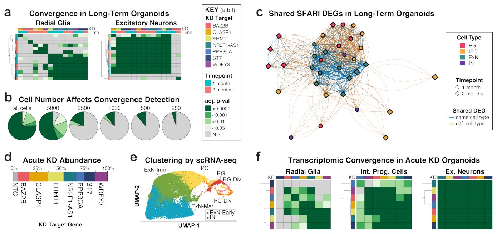
{kind=link}
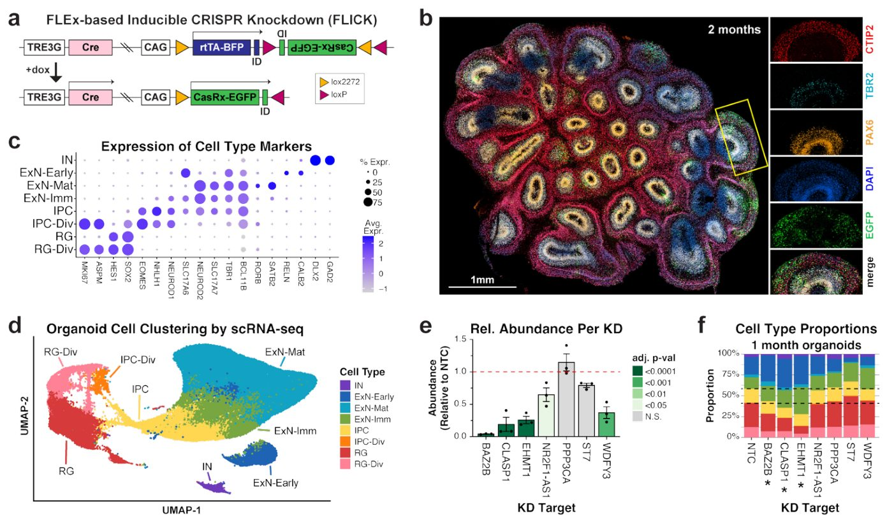
Muhim
Organoidlardagi ASD genlarining o'tkir nokdauni kuchli transkriptomik konvergensiyani tasdiqlaydi va qo'zg'atuvchi neyronlar kabi asosiy hujayra turlariga ta'sir qiladi.
REST ni o'z ichiga olgan asosiy transkripsiya omillari takroriy disregulyatsiyaga uchragan genlarga qaratilgan. Transkriptsion
regulatorlar, ASD da transkripsiya konvergensiyasini vositalashi mumkin bo'lganlar, ENCODE ma'lumotlar bazasidagi xromatin immunopresipitatsiyasi sekvenirlash (ChIP-seq) ma'lumotlaridan foydalanadigan MAGIC tahlili (Metodlar) yordamida aniqlandi, bu qiziqish uyg'otadigan genlar to'plami ichida bog'lanish nishonlari boyitilgan transkripsiya omillari va kofaktorlarni aniqlaydi. Bu NPC lardagi ko'plab ASD genlarining KD lari bo'ylab nishon genlari takroriy ravishda differensial ekspressiyalangan transkripsiya regulyatorlarini aniqladi (Rasm SN 8a va Jadval SN 11), shu jumladan CHD2 va SIN3A kabi yuqori darajada ishonchli SFARI (HC-SFARI) genlari. Ilgari ASD bilan bog'lmagan takroriy MAGIC regulyatorlari orasida bir nechta genlar ham yuqori darajada saqlanib qolgan (Jadval SN 7) hamda ma'lum ASD genlari bilan birga ekspresiyalangan (Rasm SN 8a), bu xususiyatlar yangi ASD xavf genlarini bashorat qilishini ko'rsatgan4. MAGIC tahlili organoidlarda konvergensiyaning barqaror drayverlarini ham aniqladi (Rasm SN 8a va Jadval SN 11). NPC larda aniqlangan eng yaxshi takroriy transkripsiya regulyatorlarining yarmi (13/26, 50%) organoid RG larida ham aniqlandi (Rasm SN 8b). MAGIC shuningdek, rivojlanish bosqichlari bo'ylab va uzoq muddatli va o'tkir KD vaqt shkalalari bo'ylab taqsimlangan takroriy ExN regulyatorlarini, shu jumladan ko'plab SFARI genlarini aniqladi. Qizig'i shundaki, ushbu genlarning to'qqiztasi neyron o'tmishdoshlarida ham eng yuqori transkripsiya regulyatorlari sifatida aniqlangan bo'lib, bu ularning ko'plab hujayra kontekstlarida konvergensiyaning asosiy drayverlari ekanligini ko'rsatadi. Alohida qiziqish uyg'otadigan narsa shundaki, RE1 bostiruvchi transkripsiya omili (REST) NPC buzilishlarining 17/18 qismida (94.4%) MAGIC bo'yicha sezilarli bo'lgan (Rasm SN 8a) va barcha sinovdan o'tgan sharoitlarda eng yaxshi MAGIC regulyatori sifatida doimiy ravishda namoyon bo'lgan (Rasm SN 8b). REST ning to'g'ridan-to'g'ri mutatsiyalari ilgari ASD bilan bog'lanmagan bo'lsa-da, REST neyrorivojlanishda muhim rollarga ega va neyrogenezning asosiy salbiy regulyatori sifatida ishlaydi40,41. REST disregulyatsiyasi CHD842 va Rett sindromi geni MECP243,44 kabi ASD genlarining buzilishidan keyin ham xabar qilingan. Inson va sichqoncha REST ChIP-seq bog'lanish saytlarini qayta tahlil qilish (Metodlar) REST nishonlari orasida SFARI genlarining kuchli boyishini aniqladi (mos ravishda adj. p = 3.6e-67 va 7.7e-50), jumladan HC-SFARI genlari (mos ravishda adj. p = 2.2e-13 va 3.7e-8), bu ASD bilan bog'liq genlar ekspressiyasini tartibga solishda REST ning asosiy rolini tasdiqlaydi.
Izoh
ChIP-seq usuli genom bo'ylab oqsillarning DNK bilan bog'lanish joylarini xaritalash imkonini beradi, MAGIC tahlili esa genlar to'plamlari uchun umumiy regulyator tarmoqlarni aniqlaydi.
Gen regulyator tarmog'ining rekonstruksiyasi yuqori darajada o'zaro bog'langan ASD genlarini ochib beradi
ARACNe yordamida NPC RNA-seq ma'lumotlarimizdan foydalangan holda de novo GRN rekonstruksiyasi qo'shimcha transkripsiya omillari va xromatin modifikatorlarini — birgalikda «regulatorlar» deb ataladi — ularning quyi oqimdagi nishonlari (regulonlar) bilan bog'lash imkonini berdi (Metodlar). Biz ushbu yondashuvni alohida ravishda «saqlab qolingan» (held-out) GRN larni qurish orqali tasdiqladik, bu esa regulonlarni aniqlashda aylanma xatolikning oldini olish uchun KD nishonining o'zi potentsial regulyator bo'lgan namunalardagi ma'lumotlarni istisno qildi. Ushbu saqlab qolingan GRN lardan bashorat qilingan regulonlar NPC dagi tegishli maqsadli genlarning KD qilinishidan keyin kuzatilgan DEG lar bilan kuchli darajada kesishdi (har biri uchun adj. p < 3.98e-116, birlashtirilgan p = 4.08e-937) (Rasm 4a va Rasm SN 9a). Shunday qilib, ARACNe haqiqiy regulyator munosabatlarini samarali qamrab oladi. To'liq NPC GRN ASD genlari va ularning yuqori oqimdagi regulyatorlari o'rtasida yuqori darajada o'zaro bog'liqlikni ochib berdi (Rasm 4b). Darhaqiqat, ASD genlari NPC GRN ning markaziy genlari orasida kuchli boyitilgan edi (SFARI genlari uchun adj. p = 9.81e-6, HC-SFARI genlari uchun 1.99e-4, markaziylik PageRank algoritmi yordamida baholandi, Metodlar) (Rasm 4c). Aksincha, faqat aqli zaiflik (ID-only) genlari GRN markaziy genlari orasida boyishni ko'rsatmadi (adj. p = 0.19), bu ASD genlari KD lari natijasida hosil bo'lgan DEG lar orasida kuzatilgan boyish yo'qligiga mos keladi (Rasm 1c). Bundan tashqari, markaziy GRN genlari G2M nazorat punkti (adj. p = 6.0e-4) va mitotik o'q (adj. p = 3.6e-5) bilan bog'liq yo'llar uchun boyitilgan bo'lib, bu biz kuzatgan NPC proliferatsiya fenotiplariga mos keladi (Rasm 1f va Jadval SN 10).
{kind=link}
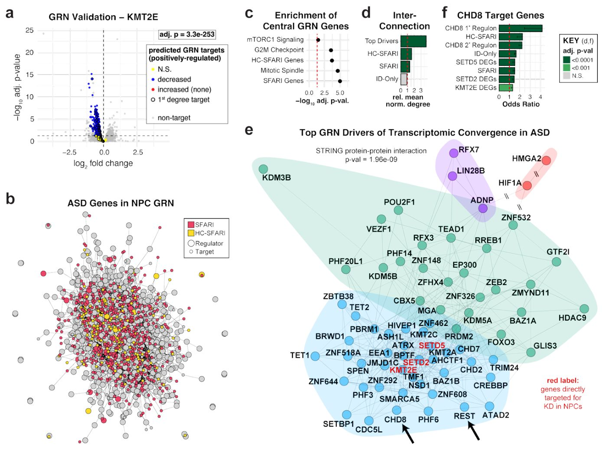
GRN tahlili CHD8 ni АSСdagi konvergensiyaning asosiy drayveri sifatida aniqlaydi
Biz keyinchalik АSС bilan bog'langan transkriptomik konvergensiyaning asosiy drayverlari sifatida harakat qiluvchi GRN regulyatorlarini aniqladik. Ushbu tahlil АSС geni KD tomonidan faolligi barqaror ravishda o'zgargan va nishonlari ham SFARI genlari bilan boyitilgan, ham GRN markazida joylashgan 70 ta asosiy konvergensiya drayverini ochib berdi (S12-jadval). Ushbu asosiy konvergensiya drayverlarining deyarli yarmi SFARI genlaridir (31/70, ОШ = 6,35, tuzatilgan p = 3,9e-11) va deyarli uchdan bir qismi yuqori darajada ishongan HC-SFARI genlaridir (22/70, ОШ = 10,61, tuzatilgan p = 6,7e-12). Aksincha, ushbu asosiy konvergensiya drayverlarining faqat yettitasi faqat aqli zaiflik (ID-only) genlaridir (7/70, ОШ = 2,06, tuzatilgan p = 0,078). Qolaversa, ushbu asosiy konvergensiya drayverlari deyarli barcha АSС geni KD larida barqaror ravishda pastga regulyatsiya qilingan (S9b-rasm). Ular shuningdek GRN da (p < 1e-6) (4d-rasm) va oqsil-oqsil o'zaro ta'sirlari STRING ma'lumotlar bazasida (p = 2,0e-9) yuqori darajada o'zaro bog'langan (Metodlar).
Muhim
GRN tahlili АSСda transkriptomik konvergensiyaning 70 ta asosiy drayverini aniqladi, ular orasida SFARI genlari ustunlik qilib, kuchli o'zaro bog'liqlik va gen KD da muvofiqlashtirilgan pasayishni namoyon etadi.
Bularni jamlagan holda, bu genlar nafaqat ko'plab АSС genlarining markaziy regulyatorlari sifatida harakat qilishini, balki bir-birini o'zaro tartibga solib, АSСda transkriptomik konvergensiyani keltirib chiqarishini ko'rsatadi. Iterativ walktrap klasterlash 70 ta asosiy konvergensiya drayverlari orasida to'rtta gen modulini aniqladi (4e-rasm), ulardan biri (ko'k) ayniqsa kuchli o'zaro bog'langan edi. Ushbu modul STRING tahlili orqali juda yuqori o'zaro ta'sirni ko'rsatdi (p < 1e-16) va o'z ichiga REST (S8-rasm) hamda АSС uchun eng kuchli ma'lum xavf genlaridan biri bo'lgan CHD8 ni oldi. Muhimi, GRN dan taxmin qilingan CHD8 reguloni ChIP-seq orqali ilgari aniqlangan to'g'ridan-to'g'ri CHD8 nishon genlari uchun kuchli boyitilgan edi (1-darajali regulon tuzatilgan p = 4,6e-7, 2-darajali regulon tuzatilgan p = 3,9e-20) (4f-rasm), bu ARACNe tomonidan bashorat qilingan regulyator munosabatlarning haqiqiyligini yanada tasdiqlaydi.
Izoh
ChIP-seq (xromatin immunopresipitatsiyasi va ketma-ketlikni aniqlash) metodi transkriptomik omillar kabi oqsillar genomning qaysi qismlariga birikishini aniqlash imkonini beradi.
Qolaversa, oldingi hisobotlarga mos ravishda, CHD8 ChIP-seq nishonlari ham NPC da ekspressiya qilinadigan SFARI genlari (tuzatilgan p = 2,6e-8) va HC-SFARI genlari (tuzatilgan p = 8,5e-8) uchun yuqori darajada boyitilgan edi. CHD8 ni o'z ichiga olgan modul biz bevosita ta'sir ko'rsatgan uchta transkripsion regulyatorni (SETD2, SETD5 va KMT2E) o'z ichiga oldi va ushbu KD lardan kelib chiqqan DEG lar CHD8 ChIP-seq nishonlari uchun sezilarli boyitishni ko'rsatdi (mos ravishda tuzatilgan p = 1,2e-5, 7,8e-8 va 2,6e-4) (4f-rasm), bu muhim АSС genlari tomonidan umumiy nishonlarning konvergent regulyatsiyasini yana bir bor namoyon etadi. Ushbu tahlil yuqori darajadagi ishonchli АSС xavf geni bo'lgan CHD8 ni АSСdagi transkriptomik konvergensiyaning asosiy drayveri sifatida ta'kidlaydi.
X-bog'langan transkripsion omil ZFX АSС genlarining ayollar jinsiga qarab og'ishgan regulyatoridir
Oldingi tadqiqotlar shuni ko'rsatdiki, АSСda pastga regulyatsiya qilingan genlar neyrotipik ayollar miyasida erkaklarga qaraganda yuqoriroq darajada ekspressiya qilinishiga moyil bo'lib, bu bazal ayol jinsiga moyil ekspressiya FPE ga hissa qo'shishi mumkin bo'lgan ehtimolni oshiradi. Biz АSС geni KD tomonidan doimiy ravishda pastga regulyatsiya qilingan va miyada ayol jinsiga moyil ekspressiyani ko'rsatgan 82 ta genni aniqladik (Metodlar), ulardan 28 tasi yuqori darajada cheklangan bo'lib (S10a-rasm), shu jumladan 12 ta yuqori darajada cheklangan SFARI genlari mavjud (ОШ = 2,79, p = 8,65e-3) (5a-rasm).
Muhim
АSС geni KD da pastga regulyatsiya qilingan va miyada ayolga xos ekspressiyaga ega 82 ta genning aniqlanishi ularning autizmdagi jinsiy farqlarga qo'shadigan hissasini ko'rsatadi.
Neyrotipik erkak nazoratchilar va autistik erkaklarning peshona qobig'idan olingan yagona yadroli RNKni ketma-ketlikka kiritish ma'lumotlarini qayta tahlil qilish (Metodlar) — shu jumladan 15q duplikatsiya sindromi va genetik idiopatik АSС bo'lgan shaxslar — ushbu yuqori darajada cheklangan genlarning ko'pchiligi autistik erkaklarning qo'zg'atuvchi neyronlarida sezilarli darajada pastga regulyatsiya qilinganligini aniqladi, bu ularning АSС bilan bog'liqligini yanada tasdiqlaydi (5a-rasm va S10a-rasm).
Bular orasida ZFX alohida qiziqish uyg'otadi, chunki u ayollarda faol va nofaol X-xromosomalarning ikkalasidan ham ekspressiya qilinadi, bu uni rivojlanayotgan bosh miya po'stlog'i (S10b-c-rasm) jumladan turli to'qimalar bo'ylab eng yuqori va eng barqaror ayol jinsiga moyil genlardan biriga aylantiradi. Qolaversa, yaqinda e'lon qilingan hisobot patogen ZFX variantlarini АSС bilan bog'ladi va ZFX genidagi qo'shimcha kodlovchi variantlar ham АSС probandlarida aniqlandi. ZFX umumgektomik nishonlarning kuchli transkripsion aktivatorini kodlaydi va biz GRN da ZFX va АSС bilan bog'liq gen to'plamlari o'rtasida ko'plab regulyator munosabatlarni aniqladik (5b-rasm), jumladan biz ilgari aniqlagan АSСdagi transkriptomik konvergensiyaning asosiy drayverlari (ОШ = 9,8, tuzatilgan p = 2,2e-6).
Ehtiyot bo'ling
Ushbu kuzatilgan regulyator aloqalar in vitro/ex vivo modellardan olingan bo'lib, aniq sabab-oqibat mexanizmlarini tasdiqlash uchun qo'shimcha in vivo funksional tadqiqotlar talab etiladi.
Biz shuningdek ZFX ushbu asosiy drayverlarning ko'pchiligining quyi oqimdagi nishoni ekanligini, bir nechta o'zaro regulyator munosabatlarga ega ekanligini aniqladik (5c-rasm). ZFX nishonlarining АSС bilan bog'liq genlar uchun kuchli boyitilishi ZFX ChIP-seq ma'lumotlarini qayta tahlil qilish orqali yana bir bor tasdiqlandi (5d-rasm). ZFX АSС genlari buzilganda takroriy ravishda pastga regulyatsiya qilinganligi sababli, uning ayol jinsiga moyil ekspressiyasi АSС bilan bog'liq genlarning regulyatori sifatidagi roli bilan birgalikda АSС genlari ekspressiyasiga kaskadli va keng jinsiy-differensial ta'sirlarga olib kelishi mumkin, bu esa АSСdagi FPE ga potentsial ravishda hissa qo'shishi mumkin (5e-rasm).
Usullar
CasRx yordamida nokdaun
Target transkriptlarni nokdaun (KD) qilish uchun CasRx17, jumladan NLS-RfxCas13d-NLS (Addgene #109049) nishonga xos yo‘naltiruvchi RNKlar (gRNA) bilan birgalikda ishlatildi. Qiziqish uyg‘otadigan genlarga yo‘naltirilgan gRNA spayser ketma-ketliklarini loyihalash uchun chuqur o‘rganishga asoslangan vositadan foydalanildi. Ushbu spayser ketma-ketliklari gomopolimerlarni (4 tadan ortiq A, 3 tadan ortiq C, G yoki T) istisno qilish uchun filtrlindi. Potentsial nishondan tashqari (off-target) ta’sir ko‘rsatish ehtimoli bo‘lgan spayser ketma-ketliklari BLAST yordamida aniqlandi va chiqarib tashlandi. Har bir maqsadli gen uchun 3 ta alohida spayser ketma-ketligi tanlandi va tandem pre-gRNA massiviga birlashtirildi, bunda har bir spayser ketma-ketligidan oldin CasRx to‘g‘ridan-to‘g‘ri takrorlanish (DR36) ketma-ketligi joylashtirildi: CAAGTAAACCCCTACCAACTGGTCGGGGTTTGAAAC. Tandem pre-gRNA massivlari KD uchun CasRx tomonidan alohida gRNA larga ishlov beriladi. To‘liq ketma-ketliklar Qo‘shimcha jadvalda keltirilgan.
Izoh
Nokdaun (KD) va gRNA — bu maxsus RNK-gidlar (gRNA) yordamida muayyan genlar ekspressiyasini pasaytirish bo‘lib, ular fermentlarni parchalanishi kerak bo‘lgan kerakli matritsali RNKga yo‘naltiradi.
Molekulyar klonlash
Birlamchi NPC KD eksperimentlari uchun konstruksiyalar yaratish maqsadida asos (backbone) sifatida pSicoR lentiviral plazmidasi (Addgene #11579) ishlatildi. Sichqoncha U6 promoteri CasRx gRNA massivlari ekspressiyasini boshqarish uchun foydalanilgan odam U6 promoteri bilan almashtirildi. Ushbu konstruksiyalar CasRx klonlangan (knock-in) hujayra liniyasi bilan birgalikda ishlatildi (pastda tasvirlangan). Avto-vestern-blot orqali CasRx KD ni tasdiqlash uchun yetarli miqdordagi NPC larni olish maqsadida (pastda tasvirlangan), CAG promotor elementidan CasRx va EGFP ni, hamda odam U6 promoteridan gRNA massivlarini eksprimatsiya qiluvchi barchasi birda (all-in-one) konstruksiyasi yaratildi. Shuningdek, asos tarkibida invertirlangan terminal takrorlanishlar (ITR) mavjud bo‘lib, bu piggyBac transposazasi yordamida konstruksiyaning genomga integratsiyalashuviga imkon berdi. Ushbu konstruksiyalar LiOn dizayniga asoslangan (Addgene #154019), shuning uchun CasRx va EGFP ekspressiyasi piggyBac transposazasi orqali konstruksiyaning rekombinatsiyasiga bog‘liq bo‘lib, episomal plazmidadan ekspressiyaning oldini oldi. Ushbu barchasi birda konstruksiyasi ftorofor KD tahlillari va NPC proliferatsiya tahlillari uchun ham ishlatildi. NPC larda ftoroforlarni eksprimatsiya qilish uchun CAG promotor elementi boshqaradigan mKO2, mScarlet yoki iRFP670 o‘z ichiga olgan iOn asosidagi konstruksiyalar yaratildi. shRNA asosidagi KD uchun shRNA dizayni Horizon siDesign Center vositasi (https://horizondiscovery.com/en/ordering-and-calculation-tools/sidesign-center) yordamida amalga oshirildi. G bilan boshlanadigan bashorat qilingan shRNA lar tanlandi va potentsial nishondan tashqari o‘zaro ta’sirlarga ega bo‘lganlari BLAST yordamida aniqlanib, chiqarib tashlandi. Tanlangan shRNA lar (Qo‘shimcha jadval 13) pSicoR plazmidasiga (Addgene #11579) klonlandi. Organoid eksperimentlari uchun biz FLEx dizaynini o‘z ichiga olgan asosga bir nechta xususiyatlarni muhandislik usulida kiritish orqali FLEx asosidagi Indutsiya qilinadigan CRISPR nokdaun (FLICK) konstruksiyasini yaratdik. Xususan, biz intronni o‘z ichiga olgan va klonlash paytida plazmidaning rekombinatsiyasini oldini oladigan o‘zgartirilgan Cre rekombinazasini qo‘shdik. Shuningdek, doksikilin ta’sirida induksiyalanadigan rekombinatsiyani ta’minlash uchun CasRx17 hamda Tet-On 3G tizimining barcha kerakli komponentlarini kiritdik. Bundan tashqari, flüoresan reportyorlar uchun polyA saytlaridan biroz yuqoriroqda identifikatsiya qiluvchi shtrix-kod ketma-ketliklarini kiritdik, bu esa yagona hujayra RNK sekvensiyasi (scRNA-seq) orqali har bir hujayraga qaysi KD konstruksiyasi kiritilganligini aniqlash imkonini berdi. Nihoyat, piggyBac transposazasi yordamida konstruksiyaning genomga integratsiyalashuviga imkon beruvchi ITR larni qo‘shdik. Barcha konstruksiyalarning ketma-ketliklari to‘liq plazmida sekvensiyasi (Plasmidsaurus) yordamida tekshirildi.
Hujayra madaniyati
Barcha odam hujayralari madaniyati ishlari Boston Bolalar kasalxonasining IRB #S07-02-0087 tomonidan tasdiqlangan bayonnomalar ostida amalga oshirildi. Nazorat erkak odam iPSC liniyasi “280” ilgari hosil qilingan va to‘liq tavsiflangan. Odam iPSC lari va iPSC dan kelib chiqqan NPC lar Matrigel (Corning #354277) yoki Geltrex (ThermoFisher #A1413302) bilan oldindan qoplangan to‘qima madaniyati plitalarida o‘stirildi. Hujayralar Accutase (Millipore Sigma #SCR005) yoki ReleSR (StemCell Technologies #100-0483) yordamida kerak bo‘lganda pasajlandi. Odam iPSC lari mTeSR™ Plus muhitida (StemCell Technologies #100-0276) kultivatsiya qilindi. Odam NPC lari iPSC lardan STEMdiff™ SMADi Neural Induction Kit (StemCell Technologies #08582) yordamida Monolayer Culture Protocol ga amal qilgan holda kamida uch hafta davomida hosil qilindi. NPC lar Neural Induction Medium + SMADi muhitida uzluksiz o‘stirildi va Neural Progenitor Medium ga o‘tkazilmadi. Muhitga iPSC yoki NPC lar pasajlanganidan keyin taxminan 1 kun davomida 10 mkM Y-27632 (StemCell Technologies #72304) qo‘shildi. Miya organoidlari Giandomenico va boshq. (2021) tavsiyalari hamda qo‘shimcha modifikatsiyalar bilan 280-iPSC lardan STEMdiff™ Cerebral Organoid Kit (StemCell Technologies #08570) yordamida hosil qilindi. Xususan, organoidlar 7-kuni Matrigelga (Corning #354277) ko‘milgan va 14-kunga qadar Expansion Medium da o‘stirilgan, shundan so‘ng ular Matrigeldan chiqarilib, orbital chayqatgichda Maturation Medium ga o‘tkazilgan. Protokollar bo‘yicha to‘liq tafsilotlarni quyidagi manzilda ko‘rishingiz mumkin: https://dx.doi.org/10.17504/protocols.io.x54v95p5ql3e/v1. Hujayra liniyalarining hech biri autentifikatsiya qilinmagan. Barcha hujayra liniyalari mikoplazma bilan zararlanmagani muntazam ravishda tekshirilib turildi.
CasRx Knock-in iPSC larni olish
CasRx17 ilgari tasvirlangan nishonga olish konstruksiyalari yordamida 280-iPSC larning AAVS1 xavfsiz harbor lokusiga kiritildi. Alohida iPSC koloniyalari tanlab olindi va ko‘paytirildi. AAVS1 lokusining to‘g‘ri nishonga olinganini tasdiqlash uchun Celplor tomonidan Southern blot tahlili bajarildi. Kariootip tahlili KaryoStat (ThermoFisher) yordamida amalga oshirildi, u 1-xromosomada mikromatrix nomenklaturasida arr[GRCh37] 1q32.1(204108163_206539638)x3 sifatida tasvirlangan 2,4 Mb ortishni aniqladi. Bu hududda maqsadli genlarning hech biri mavjud emas edi.
Lentivirus
Lentivirus ilgari tasvirlangan standart protokollar yordamida hosil qilindi. Lentiviruslar 4,0 infeksiya ko‘pligi (MOI) darajasida qo‘llanildi, chunki bunday MOI >98% transformatsiyalangan hujayralarni beradi. RNK 24 soatdan keyin ajratib olindi.
RNK Sekvenirlash (RNA-Seq) uchun Kutubxonani Tayyorlash
Umumiy RNK Direct-zol RNA Microprep Kit (Zymo Research, #R2062) yordamida ajratib olindi va 3’ RNK-seq kutubxonalari CheapSeq bayonnomasidan tavsiyalar va guruhlash strategiyalarini o'z ichiga olgan holda TagSeq bayonnomasining o'zgartirilgan versiyasiga muvofiq tayyorlandi. Qisqacha aytganda, har bir namunadan 200 ng umumiy RNK CheapSeq uchun ta'riflanganidek, indekslangan oligo(dT) praymeri va bufer (NEB, #M0466L) bilan birlashtirildi. RNK qopqoqsiz, oldindan qizdirilgan termotsiklerda 94 °C da 2,5 minut davomida fragmentlarga bo'lindi, shundan so'ng namunalar darhol muzga o'tkazildi. Keyin har bir namuna CheapSeq uchun ta'riflanganidek, tesk riptaza uchun zarur bo'lgan qo'shimcha reagentlar bilan birga indeks va noyob molekulyar identifikatorni (UMI) o'z ichiga olgan matritsani almashtiruvchi oligo (TSO) bilan aralashtirildi. Teskari transkripsiya reaksiyasi issiqlik bilan inaktivatsiyasisiz 42 °C da 90 minut davomida amalga oshirildi. Qolgan bir zanjirli RNK va oligolar keyinchalik 0,5 mkl EB buferi (Qiagen, #19086), 0,5 mkl termolabil ExoI (NEB, #M0568S) va 0,25 mkl RNase A (ThermoFisher, #EN0531) qo'shish va namunalarni 37 °C da 30 minut davomida inkubatsiya qilish, so'ngra 85 °C da 5 minut davomida issiqlik bilan inaktivatsiya qilish va 4 °C da ushlab turish bosqichi orqali parchalandi.
Izoh
> SPRI-seleksiya — bu magnit zarrachalar yordamida DNKni tozalash usuli bo'lib, kerakli o'lchamdagi fragmentlarni ajratib olish imkonini beradi.
Turli xil indeks ketma-ketliklariga ega bo'lgan 8 tagacha namuna birlashtirildi va 1,4x chap tomonlama SPRI-seleksiya (Beckman Coulter, #B23317) yordamida kDNT tozalandi. Keyin C1000 Touch Thermal Cycler (Bio-Rad, #1851197) yordamida pastda tavsiflangan “CheapSeq PCR” parametrlariga amal qilgan holda kDNT ni 7 sikl davomida amplifikatsiya qilish uchun qisman Read1 va qisman Read2 praymerlari bilan birga Q5 UltraII Mastermix (NEB, #M0544L) ishlatildi. Amplifikatsiyalangan kDNT 0,7x chap tomonlama SPRI-seleksiya (Beckman Coulter, #B23317) orqali tozalandi. Yakuniy kutubxona qurilishi Q5 UltraII Mastermix (NEB, #M0544L) hamda standart TruSeq indekslash praymerlari (NEB, #E6440S) yordamida va pastda tavsiflangan “CheapSeq PCR” parametrlariga amal qilgan holda 8 sikl davomida amplifikatsiya qilish orqali amalga oshirildi. Kutubxonalar 0,4x-0,65x ikki tomonlama SPRI-seleksiya (Beckman Coulter, #B23317) yordamida tozalandi. Tozalangan kutubxonalar Tapestation HSD1000 (Agilent, #5067-5584 va #5067-5585) yordamida baholandi. Oligo ketma-ketliklari uchun Qo'shimcha 14-jadvalga qarang. CheapSeq ПЦР: 1. 98 °C da 30 s; 2. 98 °C da 10 s, 65 °C da 75 s bo'lgan X sikl; 3. 65 °C da 5 min; 4. 4 °C abadiy.
CasRx-KD NPC larning hajmli RNK-seq tahlilidan Differensial Ekspressiya qilingan Gen (DEG) tahlili
Har bir shart uchun uchta alohida NPC namunasi tahlil qilindi. Individual KD shartlari birgalikda 9 ta nazorat namunasi to'plami sifatida ko'rib chiqilgan uchta nishonsiz nazorat (NTC) shartlari bilan taqqoslandi. Gen ekspresiyasi UMI dedublikatsiyasi bilan alevin-fry yordamida miqdoriy aniqlandi (salmon-v1.9). Salmon indeksi va transkriptdan gengacha bo'lgan xarita Gencode v45 yordamida tuzildi. Bir xil gengacha xaritalangan alohida transkriptlarning soni jamlandi. Keyingi tahlillar uchun faqat NTC namunalarida baseMean ekspresiyasi >10 bo'lgan genlar ko'rib chiqildi. Differensial ekspresiya tahlili ~Batch + sgRNA modeli yordamida DESeq2 (v1.42.0) yordamida amalga oshirildi. KD ni tasdiqlash uchun p-qiymatlar bevosita nishonga olingan 20 ta genlar to'plami uchun ko'p gipotezalarni sinovdan o'tkazish uchun Benjamini-Hochberg tuzatishi yordamida tuzatildi. SRCAP uchun xom p-qiymat Tomchi Raqamli PtsR (quyida qarang) dan olingan, chunki SRCAP past ekspresiya tufayli RNK-seq tahlilidan filtrlangandi. Qarang
Tomchi Raqamli PtsR (ddPCR)
Past ekspresiya tufayli RNK-seq tahlilidan filtrlanganning SRCAP KD ni tasdiqlash uchun, RNK-seq uchun ishlatilgan bir xil RNK namunalari (yuqorida) ddPCR yordamida baholandi. RNK birinchi navbatda SuperScript™ IV VILO™ Master Mix (ThermoFisher Scientific, #11756050) yordamida kDNT ga aylantirildi. Keyinchalik, ddPCR 0,25 ng/mkl RNKga ekvivalent konsentratsiyadagi kDNT (20 mkl reaksiya uchun 5 ng), yakuniy konsentratsiyasi 0,1 mkm bo'lgan praymerlar va QX200™ ddPCR™ EvaGreen Supermix (Bio-Rad, #1864033) ni birlashtirish orqali amalga oshirildi. ddPCR reaksiyalari QX200 AutoDG Droplet Digital PCR System (Bio-Rad) yordamida amalga oshirildi. Ekspresiya darajalari uy xo'jaligi geni HPRT1 ekspresiyasi yordamida normallashtirildi. Natijalar Expr ~ Batch + type modeli yordamida tahlil qilindi, bu yerda type yo NTC yoki nishon gen (SRCAP) edi. Olingan xom p-qiymat bevosita nishonga olingan 20 ta genlar to'plami uchun ko'p gipotezalarni sinovdan o'tkazish uchun Benjamini-Hochberg tuzatishi yordamida boshqa KD nishonlari (yuqoridagi RNK-seq dan) bilan birga tuzatildi. Qarang
Praymer Dizayni
Praymerlar (Qo'shimcha 15-jadval) BLAST71 yordamida potentsial nishondan tashqari o'zaro ta'sirlarni baholaydigan Primer-BLAST84 yordamida ishlab chiqilgan. Oligolar Azenta yoki IDT orqali buyurtma qilingan. Praymer spetsifikligi PtsR mahsulotlarini Sanger sekvenirlash orqali tasdiqlandi (Azenta).
Avtomatik Vestern Blot
CasRx KD dan keyin oqsil ekspresiyasi darajasini tahlil qilish uchun LiOn asosidagi KD konstruktsiyalari (“Molekulyar Klonlash” ga qarang) piggyBac-transpazani eksprimatsiya qiluvchi plazmid bilan birga 280-NPC larga nukleofektsiya qilindi (tafsilotlar uchun “Nukleofektsiya” ga qarang). To'rt kun o'tgach, KD konstruktsiyalarini eksprimatsiya qiluvchi EGFP+ hujayralar FACS (BD FACSymphony™ S6) yordamida yig'ildi. Hujayralar pelet qilindi va suyuq azotda tez muzlatildi. Oqsil ekstraksiyasi va avtomatik vestern blot RayBiotech tomonidan quyidagi antitelolar yordamida amalga oshirildi: Vinculin (R&D systems, MAB6896, klon 728526) 1:25 suyultirilgan va WAC (Abcam, AB109486) 1:50 suyultirilgan.
Gen To'plamlari
- SFARI genlari: SFARI gen ma'lumotlar bazasiga kiritilgan barcha genlar14 (2025-yil 3-aprel nashri).
- Yuqori ishonchli SFARI (HC-SFARI) genlari: 1 ballga ega bo'lgan SFARI genlari.
- Aqliy zaiflik (ID) genlari: SysNDD ma'lumotlar bazasidan85 (2025-yil 23-avgustda kirilgan) quyidagi genlar:
a. ID atamasi bilan bog'langan (HP:0001249, HP:0001256, HP:0002342, HP:0010864, HP:0002187); b. “aniq” (definitive) toifasida bo'lgan; c. SFARI genlari bo'lmagan.
Boyitish tahlillari
Boyitish tahlillari bir tomonlama Fisherning aniq testlari (fisher.test, base R v4.3.1) yordamida amalga oshirildi va p-qiymatlar ko'pikli gipotezalarni tekshirish uchun Benjamini-Hochberg tuzatishi yordamida tuzatildi (p.adjust, method = “BH”, base R v4.3.1). Ustunli diagrammalar sifatida ko'rsatilganda, asosiy ustunlar bir tomonlama Fisherning aniq testidagi imkoniyatlar nisbatini (OR) bildiradi; xatolik chiziqlari OR bo'yicha 95% ishonch oralig'ining quyi chegarasini ko'rsatadi (bir tomonlama test uchun yuqori chegara aniqlanmagan).
Izoh
Fisherning aniq testi va Benjamini-Hochberg tuzatishi bir nechta taqqoslashlar paytida soxta musbat natijalardan himoyalangan holda, qaysi biologik funksiyalar yoki yo'llar bizning ma'lumotlarimizda ortiqcha taqdim etilganligini statistik baholash uchun qo'llaniladi.
Fluoroforlarni nokdaun qilish
Fluoroforlarni ekspressiya qiluvchi konstruktlar (qarang: “Molekulyar klonlash”) piggyBac-transpozazani ekspressiya qiluvchi plazmida bilan birga 280-iPSC hujayralariga nukleofeksiya qilindi (batafsil ma'lumot uchun “Nukleofeksiya” bo'limiga qarang). iPSC hujayralari ko'paytirildi, so'ngra barcha uchta fluoroforni ekspressiya qiluvchi hujayralar Cytek Aurora CS spektral hujayra saralagichi yordamida FACS orqali ajratib olindi. Saralangan iPSC hujayralari yana ko'paytirildi va keyin NPC larga induksiya qilindi (qarang: “Hujayra madaniyati”). Keyinchalik LiOn asosidagi CasRx KD konstruktlari piggyBac-transpozazani ekspressiya qiluvchi plazmida bilan birga ushbu NPC larga nukleofeksiya qilindi. To'rt kun o'tgach, barcha to'rtta fluoroforni ekspressiya qiluvchi hujayralar (EGFP KD konstruktlarining ekspressiyasini ko'rsatgan holda) Cytek Aurora CS spektral hujayra saralagichi yordamida reporterlarning flüoresans intensivligi uchun tahlil qilindi. Namunalar va reporterlar bo'yicha geometrik o'rtacha flüoresans intensivligidagi (log2) sezilarli farqlarni sinab ko'rish uchun Bonferronining ko'p sonli taqqoslash testi bilan oddiy ikki tomonlama ANOVA ishlatildi.
shRNA yordamida nokdaun qilish
Har bir nishon uchun uch xil shRNA ga ega pSicoR asosidagi konstruktlar hovuzga jamlandi va keyin 280-NPC larga nukleofeksiya qilindi (batafsil ma'lumot uchun “Nukleofeksiya” qarang, bu yerda tasvirlangan o'zgarishlar bilan). Ushbu konstruktlar transpozitsiyaga qodir bo'lmagani sababli, piggyBac transposase73 ni ekspressiya qiluvchi plazmida chiqarib tashlandi va buning o'rniga pSicoR asosidagi plazmida miqdori jami 15 mkg gacha oshirildi. Nukleofeksiyadan keyingi kuni konstruktlarni ekspressiya qiluvchi EGFP+ hujayralar FACS (BD FACSymphony™ S6) yordamida ajratib olindi va bir kecha davomida tiklanishi uchun qayta ekildi. Keyingi kuni Zymo DNA/RNA Shield yordamida RNK yig'ildi. 3’ RNA-seq Plasmidsaurus tomonidan amalga oshirildi (DGE RNA-Seq xizmati).
shRNA-KD NPC larning bulk RNA-seq ma'lumotlarini DEG tahlili
Differensial ekspressiya tahlili bizning CasRx-KD tajribalarimiz bilan bir xil tahliliy quvur liniyasi yordamida amalga oshirildi: ~targetGene modeli bilan differensial ekspressiya tahlilini o'tkazish uchun DESeq2 (v1.42.0) ishlatildi, bunda differensial ekspressiya NTC shRNA larga nisbatan hisoblandi (ekspressiya qilinmaydigan transkriptlar lusiferaza va lacZ ga mo'ljallangan). Transkriptomik miqyosdagi tahlillar uchun p-qiymatlar NTC hujayralarida baseMean >10 bo'lgan 14 601 ta gen to'plami uchun ko'pikli gipotezalarni tekshirish uchun Benjamini-Hochberg tuzatishi yordamida tuzatildi. Differensial ekspressiya qilingan genlar (DEG) tuzatilgan p-qiymati < 0.05 bo'lgan differensial ekspressiya qilingan genlar sifatida aniqlandi.
Deneault va boshq. (2018) gen ekspressiyasi ma'lumotlarini tahlil qilish
Deneault va boshq. (2018)20 dan olingan gen ekspressiyasi sonlari GEO dan yuklab olindi (GSE107878). Differensial ekspressiya tahlili bizning CasRx-KD tajribalarimiz bilan bir xil tahliliy quvur liniyasi yordamida amalga oshirildi: expression ~ targeted gene modeli bilan differensial ekspressiya tahlilini bajarish uchun DESeq2 (v1.42.0) ishlatildi. Differensial ekspressiya qilingan genlar (DEG) ham neyronlar, ham induksiyalangan Pluripotent o'zak hujayralari uchun nazorat hujayralariga nisbatan aniqlandi. Nazorat namunalarida o'rtacha gen ekspressiyasi 10 dan yuqori bo'lgan genlargina potensial DEG sifatida ko'rib chiqildi va p-qiymatlar Benjamini-Hochberg tuzatishi yordamida tegishli ravishda tuzatildi. DEG tuzatilgan p-qiymati < 0.05 bo'lgan differensial ekspressiya qilingan genlar sifatida aniqlandi.
O'zaro boyitish tahlili
Biz quyidagilar orasidagi DEG overlapini miqdoriy baholadik: (1) NPC larda bizning CasRx-KD tajribalarimiz, (2) NPC larda bizning shRNA-KD tajribalarimiz, (3) Deneault va boshq. (2018)20 dan KO iPSC va (4) Deneault va boshq. (2018)20 dan KO ExN. DEG larning har bir juftlik taqqoslashi uchun boyitish tahlillari ko'rib chiqilayotgan ikkala namuna turi tomonidan ekspressiya qilingan genlar koinoti bilan bir tomonlama Fisherning aniq testlari yordamida amalga oshirildi. P-qiymatlar ko'pikli gipotezalarni tekshirish uchun Benjamini-Hochberg tuzatishi yordamida tuzatildi.
SFARI genlari bilan ekspressiya korrelyatsiyasini tahlil qilish
Qiziqish uyg'otadigan gen bizning NPC RNA-seq ma'lumotlarimizda SFARI genlari bilan sezilarli darajada birgalikda ekspressiya qilinganligini aniqlash uchun biz qiziqish uyg'otadigan gen va har bir SFARI geni o'rtasidagi median Pirson korrelyatsiyasini hisobladik. Ushbu korrelyatsiya darajasi sezilarli ekanligini baholash uchun biz NPC da ekspressiya qilingan genlar koinotidan foydalangan holda (NTC larda baseMean > 10), qiziqish uyg'otadigan gen va SFARI genlari to'plami bilan bir xil o'lchamdagi 1000 ta tasodifiy tanlangan genlar to'plami o'rtasidagi median korrelyatsiyani hisoblash orqali empirik nol taqsimotni yaratdik. Shundan so'ng, bir tomonlama empirik p-qiymat kuzatilgan median korrelyatsiyadan katta yoki unga teng bo'lgan nol qiymatlarning ulushi sifatida hisoblandi. P-qiymatlari < 0.05 bo'lgan regulyatorlar SFARI genlari bilan sezilarli darajada korrelyatsiya qilingan deb hisoblandi.
Barqaror ravishda pasaygan DEG larni aniqlash
Barqaror ravishda pasaygan DEG lar quyidagilarni ko'rsatgan genlar sifatida aniqlandi: 1) kamida uchta KD tomonidan statistik jihatdan sezilarli darajada pasayish va 2) barcha KD larda sezilarli differensial ekspressiya yo'nalishida kamida 80% muvofiqlik.
Cheklov tahlili
Genetik cheklovni baholash uchun gnomad v286 dan LOEUF ballari (oe_lof_upper) olindi. Har bir gen uchun biz har bir gen bilan bog'liq transkriptlarning LOEUF qiymatlarining medianasini hisoblash orqali gen uchun bittadan LOEUF ballini hisobladik. LOEUF uzluksiz metrika bo'lsa-da, yuqori darajada cheklangan genlarni aniqlash uchun tavsiya etilganidek, LOEUF < 0.35 dan foydalandik.
Izoh
LOEUF metrikasi odamlarda inaktivatsiya qiluvchi mutatsiyalarning maqbulligini baholaydi: pastroq qiymatlar mutatsiyalarga qarshi kuchli evolyutsion bosimni (yuqori gen konserativligini) ko'rsatadi.
ASD xavfining nomzod genlari uchun qo'shimcha ma'lumotlar
Quyidagi yirik sekvenirlash tadqiqotlarining istalgan birida aniqlangan ASD xavfining nomzod genlari (8-qo'shimcha jadval) 9-qo'shimcha jadvalga kiritildi: 1. Trost va boshq. (2022); 2. Zhou va boshq. (2022); 3. Wang va boshq. (2022); 4. Doan va boshq. (2019); 5. Rodin va boshq. (2021); 6. Wilfert va boshq. (2021). Qo'shimcha adabiyotlar: 1. Alcantara va boshq. (2017); 2. Marcelis va boshq. (2024); 3. Ruiz-Reig va boshq. (2024); 4. McGhee va boshq. (2025).
Nukleofeksiya
Nukleofeksiyalar Neon Transfection System (ThermoFisher Scientific) yordamida amalga oshirildi. NPC'lar uchun 2 million hujayra 100 mkl uchi (tips) yordamida 10 mkg tashuvchan plazmida va piggyBac transposazasini ifodalovchi 2 mkg plazmida bilan nukleofeksiya qilindi. iPSC'lar uchun 1 million hujayra 100 mkl uchi (tips) yordamida 5 mkg tashuvchan plazmida va piggyBac transposazasini ifodalovchi 1 mkg plazmida bilan nukleofeksiya qilindi. Kichik miqyosdagi nukleofeksiyalar uchun 10 mkl uchi ishlatildi va hujayra soni hamda plazmida miqdori proporsional ravishda kamaytirildi. NPC'larni nukleofeksiya qilish quyidagi parametrlar yordamida bajarildi: kuchlanish = 1600 V, kenglik = 10, impuls soni = 3. iPSC'larni nukleofeksiya qilish quyidagi parametrlar yordamida bajarildi: kuchlanish = 950 V, kenglik = 30, impuls soni = 2.
Izoh
Nukleofeksiya — bu hujayra yadrosiga DNKni elektr impulslari yordamida to'g'ridan-to'g'ri kiritish usuli bo'lib, u qiyin transfeksiya qilinadigan hujayra turlarida yuqori samaradorlik ko'rsatadi.
NPC proliferatsiyasi tahlillari
LiOn asosidagi KD konstruktlari («Molekulyar klonlash» bo'limiga qarang) piggyBac transposazasini ifodalovchi plazmida bilan birgalikda 280-NPC'larga nukleofeksiya qilindi (batafsil ma'lumot uchun «Nukleofeksiya» bo'limiga qarang). To'rt kun o'tgach, hujayralar muhitda 1:500 nisbatda suyultirilgan CYTOTRACK™ Red 628/643 Cell Proliferation Assay Kit (Bio-Rad #1351205) to'plamidagi bo'yoq bilan 20 daqiqa davomida ishlov berildi. So'ngra hujayralar PBS (ThermoFisher Scientific #10010031) bilan yuvildi va passaj qilindi; har bir namunaning 1/5 qismi keyingi 4 vaqt nuqtasi uchun foydalaniladigan 4 ta alohida planshetning bitta qudug'iga ekildi. Qolgan hujayralar 0-kunda (d0) boshlang'ich CytoTrack intensivligini baholash uchun oqim sitometriyasi (BD FACSDiva dasturiy ta'minoti v8.0.3) yordamida tahlil qilindi. Keyingi 4 kun davomida har kuni har bir namunaning 1 ta qudug'i dissotsiatsiya qilindi va oqim sitometriyasi yordamida tahlil qilindi. KD konstruktini ifodalovchi EGFP+ hujayralardagi CytoTrack intensivligi qiymatlari (manfiy log2) proliferatsiya tezligidagi quduqlararo o'zgaruvchanlikni nazorat qilish uchun o'sha quduqdagi EGFP- hujayralarga nisbatan normallashtirildi. Ular, shuningdek, bo'yoqning o'zlashtirilishidagi o'zgaruvchanlikni nazorat qilish uchun d0 dagi boshlang'ich CytoTrack intensivligiga nisbatan ham normallashtirildi. Har bir KD uchun natijalar NTC namunalarining o'rtacha qiymatiga nisbatan ko'rsatildi va o'rtacha +/- o'rtachaning standart xatosi (SEM) sifatida grafikda aks ettirildi. Statistik tahlil Dunnettning ko'p sonli taqqoslash testi (GraphPad Prism) bilan oddiy ikki omilli dispersiya tahlili (ordinary two-way ANOVA) yordamida bajarildi. Namunalar soni va statistik natijalar bo'yicha to'liq ma'lumotlar 10-qo'shimcha jadvalda keltirilgan.
FLICK rekombinatsiyasini induksiya qilish
Cre ifodalanishini induksiya qilish va FLICK konstruktining rekombinatsiyasini boshlash uchun hujayralar/organoidlar 24 soat davomida 2 mkg/ml doksitsiklin (Sigma D9891-1G) bilan ishlov berildi.
FLICK KD samaradorligini baholash
FLICK konstruktlari yordamida KD samaradorligini aniqlash uchun har bir shart bo'yicha uchta alohida namuna tahlil qilindi. Nazorat 280 iPSC'lari NTC1 nazorat gRNA massivini yoki ENSG00000261840 geniga yo'naltirilgan gRNA massivini kodlovchi konstruktlar, shuningdek, FLICK konstruktlarini genomga integratsiya qilish uchun piggyBac transposazasini ifodalovchi plazmida bilan nukleofeksiya qilindi. KD ni induksiya qilish uchun hujayralar 24 soat davomida 2 mkg/ml doksitsiklin (Sigma D9891-1G) bilan ishlov berildi. FLICK konstruktini rekombinatsiya qilgan hujayralar EGFP+ hujayralar uchun floresan yordamida saralangan hujayralar oqimi (FACS) (BD FACSymphony™ S6) orqali ajratib olindi, ular uch nusxada qayta ekildi va qo'shimcha ikki kun davomida o'stirildi. Keyinchalik Direct-zol RNA Microprep Kit (Zymo Research #R2062) yordamida RNK ajratib olindi. KDNK hosil qilish uchun 500 ng RNK SuperScript™ IV VILO™ Master Mix (ThermoFisher Scientific #11756050) yordamida teskari transkripsiya qilindi. Miqdoriy PZR (qPCR) kDNK ni RNKga ekvivalent konsentratsiyada 1 ng/mkl (10 mkl reaksiya uchun 10 ng), yakuniy konsentratsiyasi 0,5 mkm bo'lganpraymerlarni va qPCR uchun PowerUp™ SYBR™ Green Master Mix (ThermoFisher Scientific #A25742) aralashtirish orqali bajarildi. qPCR reaksiyalari Master Mix protokolida tasvirlangan «fast cycling mode» shartlaridan foydalangan holda CFX384 Touch Real-Time PCR Detection System (Bio-Rad #1855484) qurilmasida har bir sample (namuna) uchun texnik uch nusxada o'tkazildi. KD maqsadli genining (ENSG00000261840) ifodalanishi delta-delta Ct usuli yordamida baholandi, bunda ifodalanish avval har bir sample uchun uy xo'jaligi geniga (housekeeping gene) HPRT1 ga nisbatan normallashtirildi, so'ngra o'rtacha +/- SEM sifatida grafikda ko'rsatilgan NTC nazorat namunalarining o'rtachasiga nisbatan ko'rsatildi. Statistik ahamlilik ikki tomonlama t-test (GraphPad Prism) yordamida baholandi.
Gistologik tahlil uchun bosh miya organoidlarini qayta ishlash
Bosh miya organoidlari 16% li PFA dan PBS da suyultirilgan 4% li paraformaldegid (PFA) da (Electron Microscopy Sciences # 15710) 4°C da bir kecha davomida fiksatsiya qilindi. Fiksatsiyadan so'ng bosh miya organoidlari PBS bilan yuvildi va keyinchalik 4°C da kamida bir kecha davomida 30% li saxaroza eritmasida (PBS dagi m/v) muvozanatlandi. Katta organoidlar uchun to'liq krioproteksiyani ta'minlash maqsadida 30% li saxaroza eritmasi bir kecha davomida inkubatsiya qilingandan keyin kamida bir marta almashtirildi.
Krioseksiya qilish uchun bosh miya organoidlari quruq muz ustida Tissue-Tek® O.C.T. Compound (Sakura #4583) muhitida muzlatildi. Qalinligi 30 mkm bo'lgan kesmalarni olish uchun Leica CM3050 S kriostatidan foydalanildi, kesmalar Fisherbrand™ Superfrost™ Plus Microscope Slides (Fisher Scientific #12-550-15) buyum oynachalariga yig'ildi va -80°C da saqlandi. Imunohigistokimyoviy tahlil uchun bloklovchi bufer 0.3 M glisin (Sigma G7403-1KG), 1% qoramol zardobi albumin (Sigma A4503-50G), 0.3% Triton X-100 (Sigma T8787-50ML), 10% normal echki zardobi (Fisher Scientific # NC9660079) va PBS ni aralashtirish yo'shidan tayyorlandi.
Oynachalar O.C.T. ni ketkazish uchun PBS da yuvildi va xona haroratida (RT) 1 soat davomida bloklovchi buferda inkubatsiya qilindi. Bloklovchi bufer olib tashlandi va uning o'rniga qiziqish uyg'otuvchi birlamchi antitelolarni o'z ichiga olgan yangi bloklovchi bufer (pastga qarang) qo'shildi, so'ngra oynachalar nam kamera idishida (Avantor # 76278-848) 4°C da bir kecha davomida inkubatsiya qilindi. Oynachalar har safar besh daqiqadan PBS bilan uch marta yuvildi.
Ikkilamchi antitelolar (pastga qarang) va yadro bo'yog'i DAPI (ThermoFisher Scientific #62248) bloklovchi buferda (mos ravishda 1:500 va 1:1000 nisbatda) suyultirilib, xona haroratida 30 daqiqa davomida oynachalarga qo'shildi va shu paytdan boshlab oynachalar yorug'likdan himoya qilindi. Shundan so'ng oynachalar har safar besh daqiqadan uch marta PBS da yuvildi. Yopuvchi oynachalar (Epredia #152455) Fluoromount-G® (Fisher Scientific #OB100-01) yordamida o'rnatildi va xona haroratida kamida bir kecha davomida quritildi. Quriganidan keyin oynachalar 4°C da saqlandi.
Izoh
Imunohigistokemiya uch o'lchamli to'qimalardagi oqsillarning joylashishini floresan antitelolar orqali aniqlashga imkon beradi.
Imunohigistokemiya va imunotsitokemiya uchun antitelolar
• PAX6 (BD Pharmingen 561462, klon O18-1330): 1:300 suyultirilgan • Nestin (Millipore Sigma HPA026111-25UL): 1:500 suyultirilgan • TBR2 (Millipore Sigma HPA028896-100UL): 1:300 suyultirilgan • CTIP2 (Abcam ab18465, klon 25B6): 1:300 suyultirilgan • EGFP (Aves GFP-1010): 1:1000 suyultirilgan • Echkaning tovuq IgY ga qarshi antitelolari, Alexa Fluor 488 (ThermoFisher A-11039): 1:500 suyultirilgan • Echkaning quyon IgG ga qarshi antitelolari, Alexa Fluor 488 (ThermoFisher A-11008): 1:500 suyultirilgan • Echkaning kalamush IgG ga qarshi antitelolari, Alexa Fluor 488 (ThermoFisher A-11006): 1:500 suyultirilgan • Echkaning sichqon IgG ga qarshi antitelolari, Alexa Fluor 555 (ThermoFisher A-21424): 1:500 suyultirilgan • Echkaning kalamush IgG ga qarshi antitelolari, Alexa Fluor 647 (ThermoFisher A-21247): 1:500 suyultirilgan • Echkaning quyon IgG ga qarshi antitelolari, Alexa Fluor 647 (ThermoFisher A-21245): 1:500 suyultirilgan • Echkaning quyon IgG ga qarshi antitelolari, Alexa Fluor 750 (ThermoFisher A-21039): 1:500 suyultirilgan
Konfokal vizualizatsiya va qayta ishlash
Bosh miya organoidlari kesmalari Zeiss LSM 980 konfokal mikroskopi yordamida tasvirga olindi. Standard tasvirni qayta ishlash Adobe Photoshop yordamida amalga oshirildi.
Bosh miya organoidlarining scRNA-seq
zcRNA-seq uchun hujayralar quyidagilardan yig'ildi: • oy: 10 ta organoid, birgalikda birlashtirilib bitta turkum sifatida yig'ildi • oylar: ikkita turkumga yig'ilgan 14 ta organoid, bunda 7 ta organoid 60-kuni birgalikda va qo'shimcha 7 ta organoid 61-kuni birgalikda yig'ildi • o'tkir nokaut (KD): 8 ta organoid, birgalikda birlashtirilib bitta turkum sifatida yig'ildi. Hujayralarni yig'ish uchun mozaik bosh miya organoidlari qaychi yordamida bo'laklarga kesildi, qoldiqlarni tozalash uchun PBS da ikki marta yuvildi va miya to'qimalari uchun tasvirlangan ferment aralashmalari yordamida Neural Tissue Dissociation Kit – Postnatal Neurons (Miltenyi Biotec # 130-094-802) yordamida dissotsiatsiya qilindi.
Yumshoq dissotsiatsiya keng teshikli uchi bo'lgan pipetkalardan (Rainin # 30389218) boshlab standart uchlargacha bo'lgan kichrayib boruvchi diametrli uchi bo'lgan pipetkalar yordamida amalga oshirildi. Rekombinatsiyalangan FLICK konstruktlariga ega hujayralar EGFP+ hujayralar uchun FACS (BD FACSymphony™ S6) orqali ajratib olindi. Butun transkriptom bo'ylab scRNA-seq kutubxonalari 10X Genomics kompaniyasining Chromium Next GEM Single Cell 3ʹ Reagent Kits v3.1 (Dual Index) to'plamlari yordamida CG000316 Rev A foydalanuvchi qo'llanmasiga amal qilgan holda tayyorlandi.
Izoh
scRNA-seq (yakka hujayrali RNK sekvensiyasi) har bir alohida hujayradagi minglab genlarning ekspresiyasini o'lchaydi.
FLICK shtrix-kod sekvensiya kutubxonalarini yaratish
Protokollar bo'yicha to'liq ma'lumotni quyidagi manzildan topishingiz mumkin: https://dx.doi.org/10.17504/protocols.io.5qpvoj5pzg4o/v1. Qisqacha: mozaik organoidlarni hosil qilish uchun ishlatilgan dastlabki iPSC hovuzidan FLICK konstruktlarini miqdoriy baholash uchun (d0) Direct-zol RNA Microprep Kit (Zymo Research #R2062) yordamida 42 ming hujayrali uch nusxali namunalardan RNK ajratib olindi.
kDNK hosil qilish uchun 50-250 ng RNK UMI larni o'z ichiga olgan oligo(dT)VNpraymer bilan birgalikda SuperScript™ IV First-Strand Synthesis System (Invitrogen 18091050) yordamida teskargi transkripsiya qilindi. Keyinchalik sekvensiya kutubxonalari Q5® Hot Start High-Fidelity 2X Master Mix (NEB #M0494L) va maxsus praymerlar yordamida yaratildi. scRNA-seq kutubxonalaridan FLICK shtrix-kod kutubxonalarini yaratish uchun 5 mkl amplifikatsiya qilingan va tozalangan kDNK (10X User Guide CG000316 Rev A ko'rsatmalariga amal qilgan holda 2-bosqich oxirigacha ishlab chiqarilgan) ishlatildi.
Shtrix-kodni o'z ichiga olgan kDNK Q5® Hot Start High-Fidelity 2X Master Mix (NEB #M0494L) va maxsus praymerlar yordamida sekvensiya uchun amplifikatsiya qilindi. Kutubxonalar SPRIselect DNA Size Selection Reagent (Beckman Coulter # B23317) yordamida tozalandi va TapeStation High Sensitivity D1000 reaktivlari (Agilent #5067-5603 va #5067-5584) yordamida baholandi.
Organoid scRNA-seq ma'lumotlarini moslashtirish va miqdorini aniqlash
scRNA-seq ma'lumotlari CRISPR-CasRx tomonidan nishonga olingan qisman parchalangan transkriptlarni miqdoriy baholashdan qochish uchun gen ekspressiyasini hisoblashga intronlar kiritilmagan holda (--include-introns=false) feature-barcode rejimida cellranger-count yordamida oldindan tuzilgan CellRanger (v.9.0.0) hg38 referensiga moslashtirildi. CRISPR gidlari ketma-ketligini aniqlash kutubxonasi FASTQ fayllari bir oylik namunalar uchun CRISPR kutubxonasi sekvenirlash chuqurligiga mos kelishi hamda cellranger-CRISPR gidlarini miqdoriy aniqlash quvuri yordamida gidni tayinlash uchun fonni minimallashtirish maqsadida seqtk (v1.4) yordamida 2 oylik namunalar uchun o'qishlarning 1.25% gacha kamaytirildi. Barcha boshqa standart parametrlar ishlatildi. CellRanger gid tayinlashlari faqat aniq bitta tayinlangan gidga ega bo'lgan hujayralarni saralash uchun ishlatildi.
Organoid scRNA-seq ma'lumotlarini oldindan qayta ishlash va sifat nazorati
Uzoq muddatli va o'tkir KD namunalari alohida, ammo bir xil tarzda qayta ishlandi. CellBender (v0.3.2) muhitdagi RNK ifloslanishini aniqlash va filtrlash uchun ishlatildi, scrublet (v0.2.3) esa avtomatik juftlashuvni aniqlash va filtrlashni amalga oshirish uchun ishlatildi. Barcha boshqa quyi oqim tahlillari Seurat (v5.0.0) yordamida bajarildi. Yuqori sifatli hujayralar quyidagi sifat nazorati metrikalariga muvofiq saqlab qolindi: 1) mitoxondriyal (percent.mt) gen ekspressiyasi foizi < 20% va 2) 500 < ifodalangan genlar soni (nFeature_RNA) < 6000.
Izoh
> Bir hujayrali RNK sekvenirlash ma'lumotlarini sifat nazorati mitoxondriyal transkriptlar darajasi bo'yicha shikastlangan hujayralarni ajratib tashlash va natijalar buzilishining oldini olish uchun juftlashgan hujayralarni olib tashlashni o'z ichiga oladi.
Organoid scRNA-seq ma'lumotlarining hujayra turini annotatsiya qilish
Hujayra turini annotatsiya qilish dastlab faqat maqsadli bo'lmagan nazorat (NTC) hujayralarida amalga oshirildi. NTC hujayralari faqat nazoratdan iborat Seurat obyektini yaratish uchun ajratib olindi. Ushbu obyekt keyinchalik normallashtirildi (NormalizeData), o'zgaruvchan belgilarni aniqlash (FindVariableFeatures), masshtablash (ScaleData; percent.mt, percent_ribo, nCount_RNA va nFeature_RNA regressiya qilingan kovariatalari) va o'lchamlarni kamaytirish (RunPCA va RunUMAP) bosqichlaridan o'tdi. Integratsiya organoid partiyalari bo'ylab harmony (v1.2.0) yordamida amalga oshirildi va ushbu integratsiyalangan obyekt nazoratsiz klasterlash uchun ishlatildi (FindNeighbors va FindClusters, piksellar soni = 0.6 va 1.2). Kam sonli nazoratsiz klasterlar (<1000 hujayra) klaster bo'ylab past sifat nazorati metrikalari (ya'ni, o'ta yuqori yoki past nCount_RNA, yuqori percent.mt) tufayli filtrlandi. Ushbu faqat nazoratdan iborat Seurat obyektining barcha keyingi 2 o'lchamli vizualizatsiyasi integratsiyalangan ma'lumotlarning UMAP ko'rinishi yordamida amalga oshirildi. Hujayra turini annotatsiya qilish kanonik miya marker genlari yordamida bajarildi. Keyinchalik yuqorida tavsiflangan kabi bir xil qayta ishlash quvuriga (masalan, normallashtirish, masshtablash, o'lchamlarni kamaytirish va integratsiya) amal qilgan holda barcha hujayralar uchun Seurat obyekti tuzildi. Hujayra turini annotatsiya qilishni amalga oshirish uchun yorliqlarni o'tkazish faqat nazoratdan iborat Seurat obyektidan (TransferData) to'liq Seurat obyektiga bajarildi. Kanonik miya marker genlarining ekspressiya naqshlari keyinchalik ushbu hujayra turi annotatsiyalarini aniqlashtirish va yakunlash uchun ishlatildi.
Miya organoidlarida har bir KD bo'yicha nisbiy miqdorni tahlil qilish
Har bir KD nishoni uchun hujayralarning nisbiy miqdori har bir vaqt nuqtasi uchun (d0, d30, d60 yoki d61) aniqlandi. d0 uchun nisbiy miqdor maxsus quvur yordamida (qarang: «Kod mavjudligi») bulk RNA-seq kutubxonalaridan (qarang: «FLICK shtrix-kod sekvenirlash kutubxonalarini qurish») aniqlandi. d30, d60 va d61 uchun nisbiy miqdor CellRanger tomonidan generatsiya qilingan CRISPR gid tayinlashlari yordamida scRNA-seq dan aniqlandi (qarang: «Organoid scRNA-seq ma'lumotlarini moslashtirish va miqdorini aniqlash»). Har bir namuna uchun natijalar d0 dagi boshlang'ich nisbatga normallashtirildi va bir xil vaqt nuqtasidagi NTC larga nisbatan ko'rsatildi. Natijalar o'rtacha +/- standart xato (SEM) sifatida chizildi. Statistik tahlil barcha uzoq muddatli namunalarni (d30, d60 va d61) hisobga olgan holda Dunnettning ko'p martali taqqoslash testi (GraphPad Prism) bilan takroriy o'lchovli bir tomonlama dispersiya tahlili (repeated measures one-way ANOVA) yordamida amalga oshirildi.
Miya organoidlarida nisbiy hujayra turi proporsiyalarini tahlil qilish
Nisbiy ExN/RG proporsiyasi d30, d60 va d61 da har bir KD nishoni uchun aniqlandi. Natijalar bir xil vaqt nuqtasidagi NTC namunasiga normallashtirildi. Statistik tahlil barcha uzoq muddatli namunalarni (d30, d60 va d61) hisobga olgan holda Dunnettning ko'p martali taqqoslash testi (GraphPad Prism) bilan oddiy bir tomonlama dispersiya tahlili (ordinary one-way ANOVA) yordamida amalga oshirildi.
Miya organoidining scRNA-seq ma'lumotlarining differensial ekspressiya tahlili
Differensial ekspressiya tahlili har bir gid bo'yicha o'zgartirilgan hujayralar va NTC olgan hujayralar o'rtasida asosiy hujayra turlari (radial glia, oraliq o'tmishdosh hujayralar, qo'zg'atuvchi neyronlar yoki tormozlovchi neyronlar) bo'yicha tabaqalashtirilgan holda amalga oshirildi. Seurat FindMarkers logfc.threshold = 0, min.pct = 0.10, min.cells.group = 3 va qolgan barcha standart parametrlar bilan differensial ekspressiyani bajarish uchun ishlatildi. Differensial ekspressiyalangan genlarning (DEG) boyitish tahlillari bir tomonlama Fisherning aniq testlari yordamida amalga oshirildi va p-qiymatlar bir nechta gipotezalarni sinovdan o'tkazish uchun Benjamini-Hochberg tuzatishi yordamida tuzatildi. Olam qiziqish uyg'otadigan ikkala taqqoslashda ham ifodalangan barcha genlar sifatida aniqlandi.
Izoh
> Differensial ekspressiya tahlili nazoratga nisbatan ma'lum bir nishon nokdaun qilinganda faolligi statistik jihatdan sezilarli darajada o'zgaradigan genlarni aniqlashga yordam beradi.
Organoid hujayra turlari o'rtasidagi umumiy DEG larni vizualizatsiya qilish
Umumiy DEG lar organoid hujayra turlari o'rtasida R paketi igraph (v2.1.4) yordamida vizualizatsiya qilindi (3c-rasm). Tugunlarning yakuniy joylashuvini aniqlash uchun Fruchterman-Reingold joylashuv algoritmi (layout_with_fr) ishlatildi.
MAGIC tahlillari
MAGIC95 (v1.1) individual buzilishlardagi DEG larda nishonlari boyitilgan transkripsiya omillari va kofaktorlarni aniqlash uchun ishlatildi. «Gen tanasi (promoterdan oxirgi ekzonning oxirigacha) hamda gen tanasining har ikki tomonida 1kb yonma-yon ketma-ketlik» strategiyasi ishlatildi. NPC tahlillari uchun olam NTC namunalarida baseMean > 10 bo'lgan barcha genlar sifatida belgilandi. Organoid tahlillari uchun olam ushbu hujayra turidagi hujayralarning kamida 10% ida ifodalangan barcha genlar sifatida belgilandi (Seurat min.pct = 0.10; log2 fold-change chegarasi yo'q), chunki bular differensial ekspressiya uchun baholangan genlar edi.
Ayollarda ustunlik qiluvchi genlarni aniqlash
Neyro‘tipik bosh miyada ayollar uchun xos ifodalanishni ko‘rsatuvchi genlarni aniqlash uchun biz quyidagi ishlardagi differensial ifodalangan genlar (DEG) to‘plamlarini birlashtirdik: (1) Kissel va b. (2024) ishining S4-jadvali: UCLA kogortasi, BrainVar kogortasi yoki metatahlil orqali ayollar tomoniga sezilarli darajada og‘gan sifatida aniqlangan. (2) Oliva va b. (2020) (https://storage.cloud.google.com/adult-gtex/bulk-qtl/v8/sbeqtl/GTEx_Analysis_v8_sbgenes.tar.gz): BRNCTXA yoki BRNCTXB da ayollar tomoniga sezilarli darajada og‘gan sifatida aniqlangan. (3) Naqvi va b. (2019) ishining S4-jadvali: baholangan barcha turlarning (odam, sichqonlar, kalamushlar, итlar va makakalar) miyasida ayollar tomoniga sezilarli darajada og‘gan sifatida aniqlangan. (4) DeCasien va b. (2026) ishining S13-jadvali: hamma joyda ayollar tomoniga og‘gan deb aniqlangan.
Izoh
Metatahlil jinsiy farqlarga ega genlarni ishonchliroq topish maqsadida turli mustaqil tadqiqotlar natijalarini birlashtiradi.
Autizmga chalingan erkaklarning yadrocha RNK sekvensiyasi (snRNA-seq) ma'lumotlarini tahlil qilish
Inson frontal qobig‘ining qayta ishlangan snRNA-seq ma'lumotlari Dias va b. (2024) dan olindi. Alohida namunalarning jinsi XIST va Y-bog‘langan genlarning ifodalanishi asosida tekshirildi. Autizmning erkaklarda ko‘proq uchrashi ma'lum bo‘lgani sababli, ushbu kogortaga faqat oz sonli ayol namunalari (bitta ayol nazorati, idiopatik autizmli ayoldan bitta namuna va 15q-duplikatsiyasi bilan bog‘langan autizmli ayoldan bitta namuna) kiritilgan. Shuning uchun biz barcha keyingi tahlillarni ushbu kogortaga kiritilgan 17 ta erkak namunasiga qaratdik. Differensial ifodalanish tahlili Seurat’ning FindMarkers funksiyasi yordamida har bir hujayra turi kesimida quyidagilar o‘rtasida amalga oshirildi: (a) erkak nazoratlari va faqat idiopatik autizmli erkaklar namunalari; (b) erkak nazoratlari va faqat 15q-duplikatsiyasi bilan bog‘langan autizmli erkaklar namunalari; va (c) erkak nazoratlari va idiopatik yoki 15q-duplikatsiyasi bilan bog‘langan autizmli erkaklarning barcha namunalari. Donor ta'sirini nazorat qilish uchun FindMarkers MAST106 yordamida bajarildi. Ahamiyatli genlar sifatida log-2 fold-change ning absolyut qiymati > 0.1 va butun transkriptom bo‘ylab tuzatilgan p-qiymati < 0.05 bo‘lganlar belgilandi.
ZFX jinsiy differensial ifodalanishining grafiklari
Quyidagi manbalardagi ma'lumotlardan foydalanildi: (1) Benoit-Pilven va b. (2025) (2) Kissel va b. (2024) (3) Fass va b. (2024) (4) DeCasien va b. (2026).
Rhie va b. (2018) hamda San Roman va b. (2024) ishlaridagi ZFX nishonlarini qayta tahlil qilish
ZFX ChIP-seq nishonlari Rhie va b. (2018) ishining S3E-jadvalidan olindi. Shuningdek, ZFX nishonlari San Roman va b. (2024) ishining S10-jadvalidan olindi, unda oldin ZFX ChIP-seq ma'lumotlari (ENCODE) va Rhie va b. (2018) ishidan ZFX KD RNA-seq ma'lumotlarining integrativ tahlili bajarilgan edi. Boyitish bir tomonlama Fisherning aniq testi yordamida tahlil qilindi va p-qiymatlar ko‘p sonli gipotezalarni tekshirish uchun Benjamini-Hochberg tuzatishi yordamida tuzatildi. Rhie va b. (2018) ishidan umumiy ZFX nishonlarini tahlil qilish uchun umumiy majmua (universe) ChIP-seq uchun ishlatilgan va RNA-seq ham mavjud bo‘lgan ikkala hujayra liniyasida (C4-2B va MCF-7) ifodalangan genlar sifatida belgilandi. San Roman va b. (2024) ishidan ZFX nishonlarini tahlil qilish uchun umumiy majmua Rhie va b. (2018) ishining mos keluvchi hujayra turida ifodalangan genlar sifatida belgilandi. Natijalar ustunli diagramma ko‘rinishida ko‘rsatildi, bunda asosiy ustunlar bir tomonlama Fisherning aniq testidan olingan imkoniyatlar nisbatini (OR) va xatolik chiziqlari OR uchun 95% li ishonch oralig‘ining quyi chegarasini bildiradi (bir tomonlama test uchun yuqori chegara aniqlanmagan).
Dasturiy ta'minot xulosasi
Ushbu qo‘lyozmada ishlatilgan dasturiy ta'minot R (v4.3.1) va R paketlari DESeq2 (v1.42.0), Seurat (v5.0.0), igraph (v2.1.4), scrublet (v0.2.3), harmony (v1.2.0), Orthology.eg.db (v3.20.0), org.Mm.eg.db (v3.20.0), org.Hs.eg.db (v3.20.0), VIPER (v1.36.0) va fgsea (v1.32.4), shuningdek CellRanger (v9.0.0), CellBender (v0.3.2), MAGIC (v1.1), salmon (v1.9), seqtk (v1.4) va BD FACSDiva v8.0.3 dasturiy ta'minotini o‘z ichiga olgan.
{kind=link}
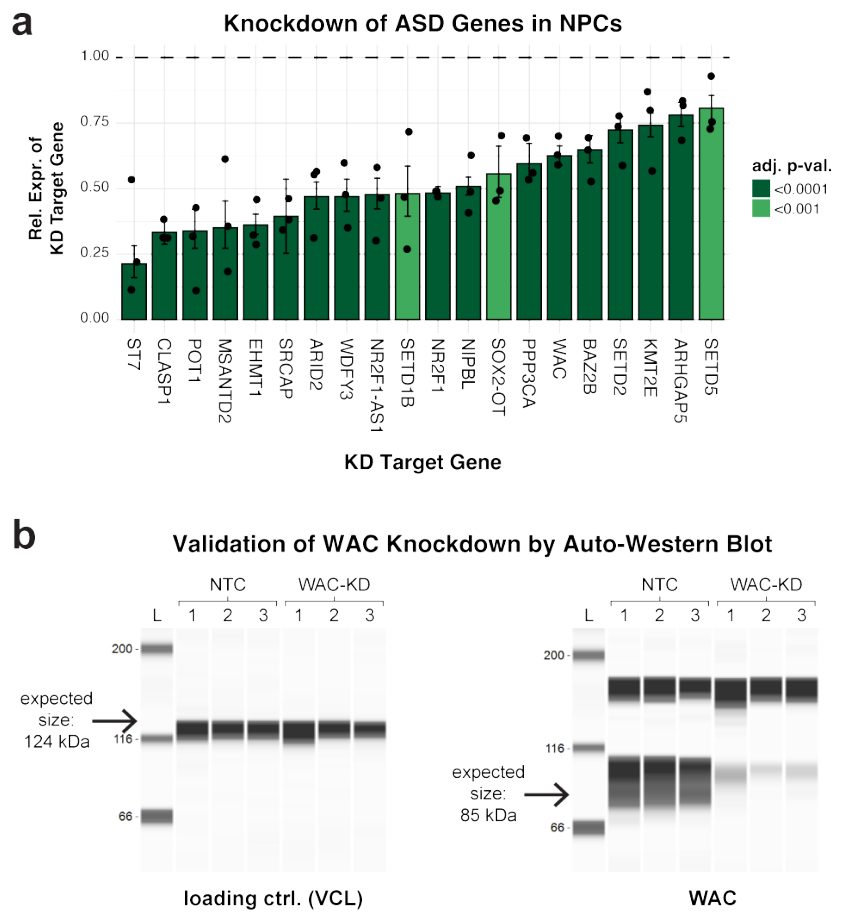
{kind=link}
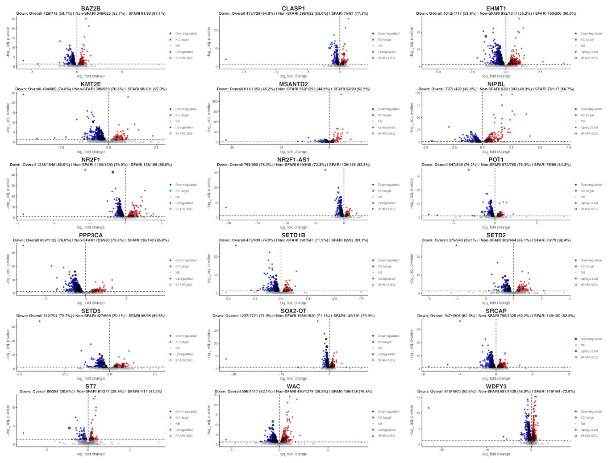
{kind=link}
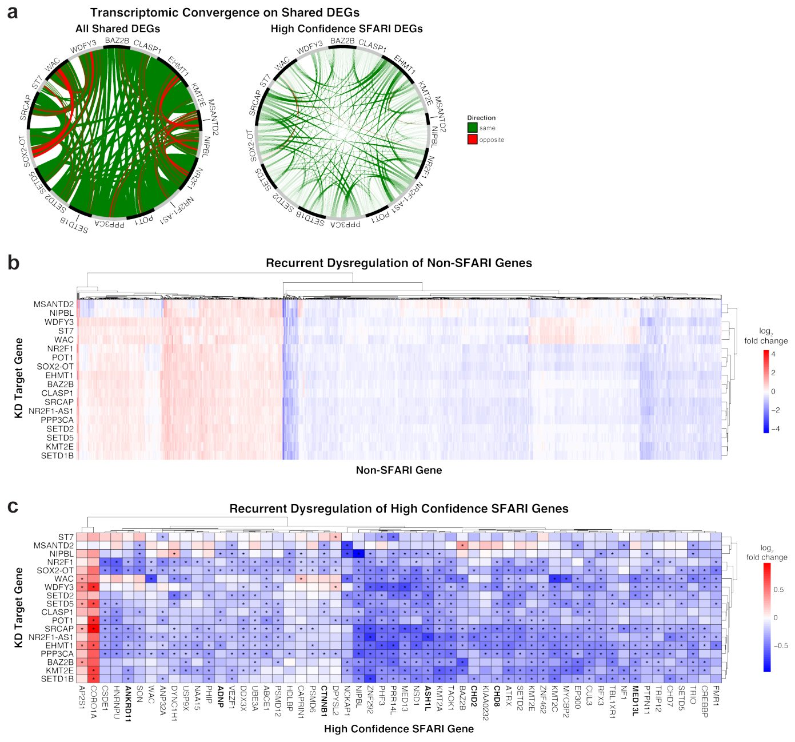
{kind=link}
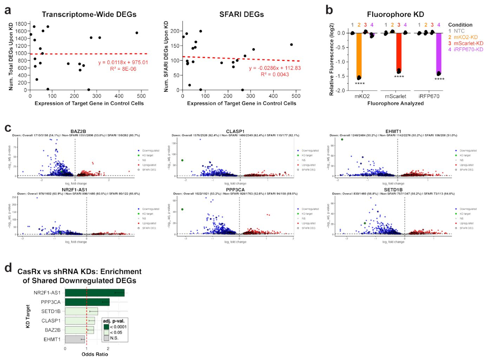
{kind=link}
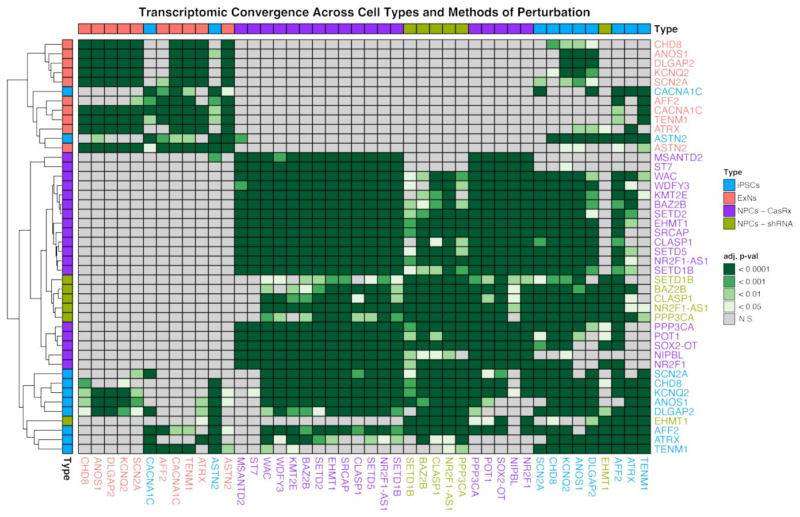
{kind=link}
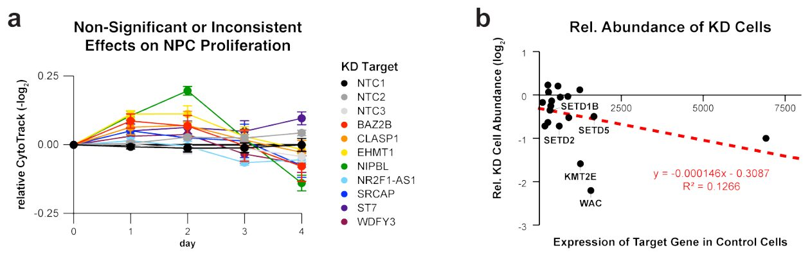
{kind=link}
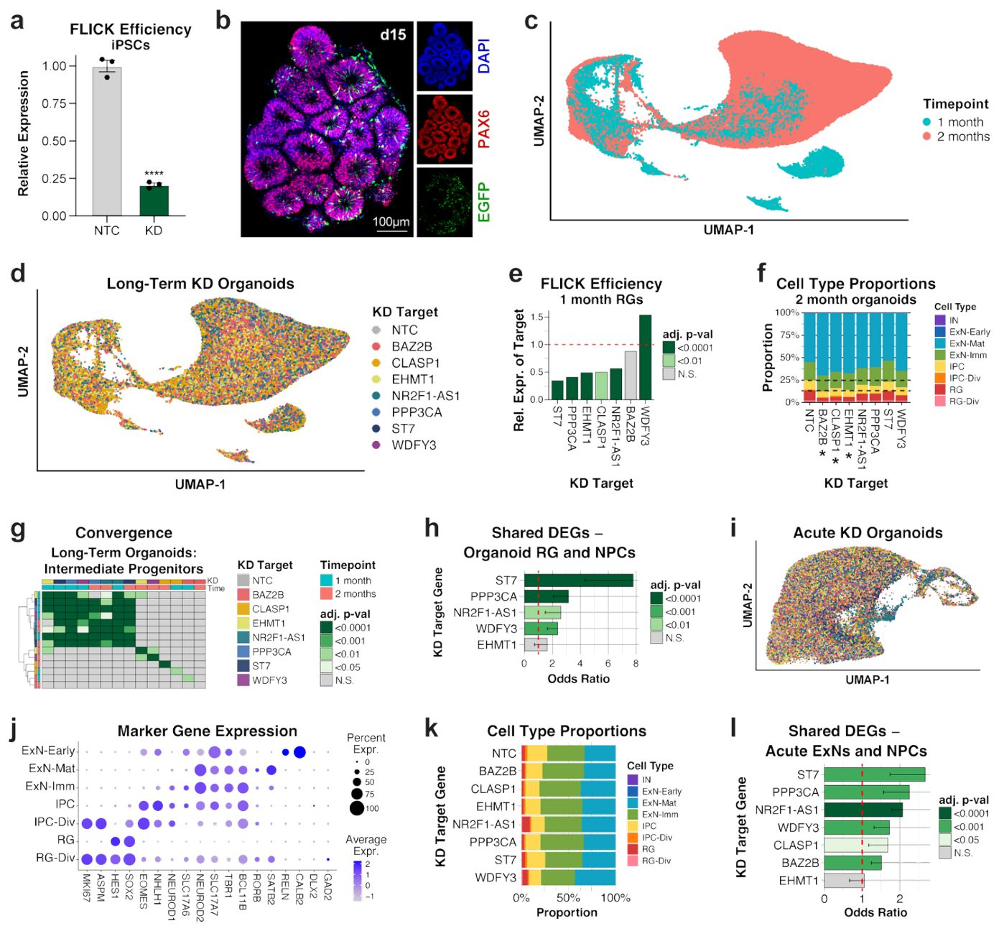
{kind=link}
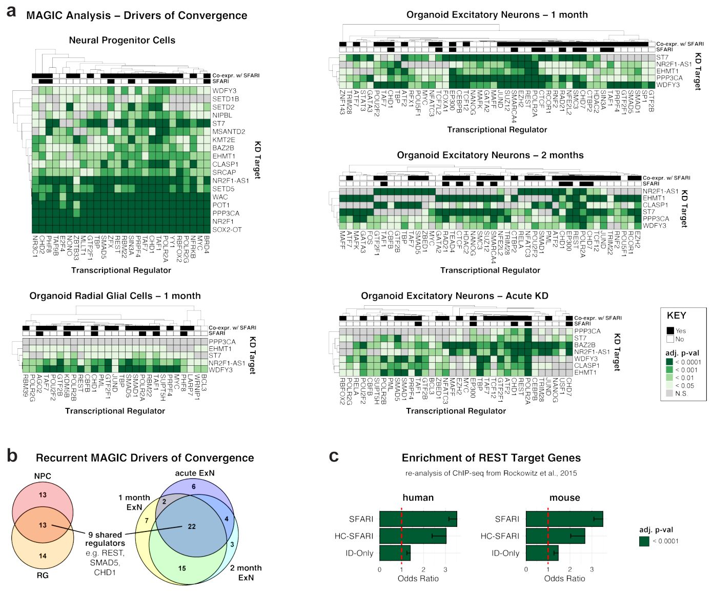
{kind=link}
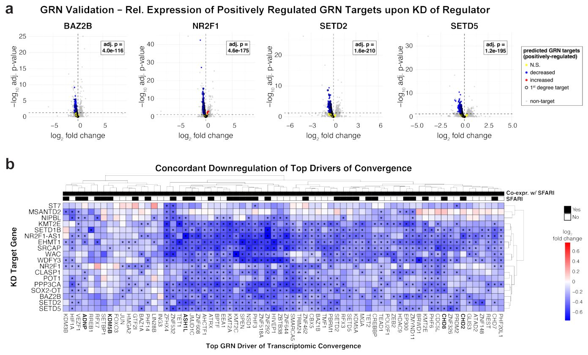
{kind=link}
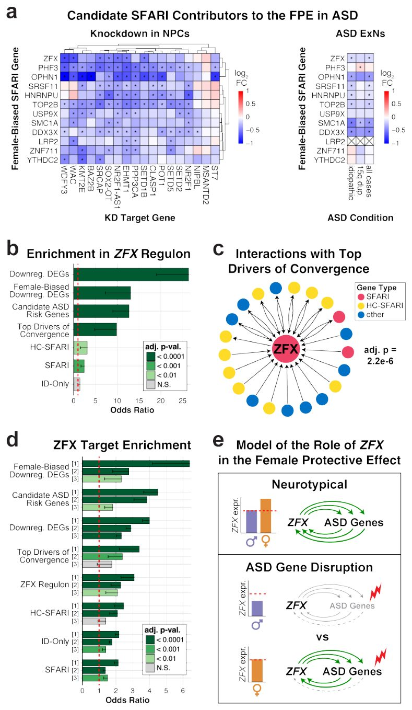
{kind=link}
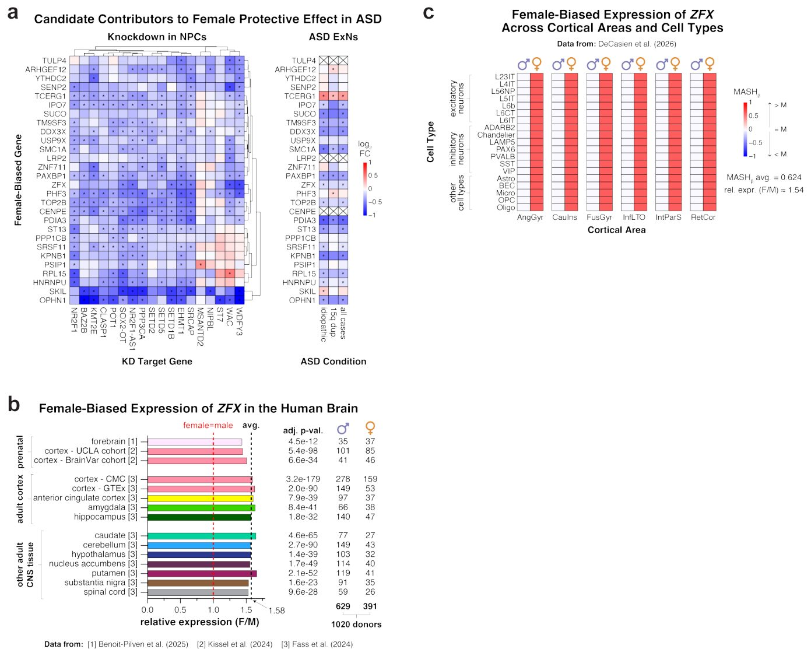
Tadqiqot sxemasi
Preprint hali taqriz qilinmagan. Xulosalar dastlabki.
Manba
| Kategoriya | Preprint litsenziyasi |
|---|---|
| genetics | CC BY 4.0 |
Manbalar
| Manba | Havola |
|---|---|
| Страница препринта | biorxiv.org |
| Полный текст (PDF) | biorxiv.org |
| Копия PDF | github.com |
| DOI | doi.org |
| Метаданные Crossref | api.crossref.org |
| Europe PMC | europepmc.org |